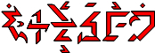
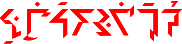

| 5.1 Function | 5.5 Phase | 5.9 Validation |
| 5.2 Mood | 5.6 Sanction | 5.10 Aspect |
| 5.3 Illocution | 5.7 Valence | 5.11 Bias |
| 5.4 Case-Frames & Relation | 5.8 Version |
The Ithkuil verbal formative (termed “verb” in
this Chapitre for simplicity’s sake) is the workhorse of the language,
inflecting for twenty-two different morphological categories. These include
the seven categories shared by all formatives and already discussed in Chapitre
3: Configuration, Affiliation, Perspective, Extension, Essence,
Context, and Designation. Additionally the following
fifteen categories apply solely to verbs: Function, Mood, Illocution, Case-Frame, Relation, Phase,
Sanction, Valence, Version, Validation, Aspect, Format, Modality, Level, and Bias.
Additionally, Ithkuil allows for stem incorporation, i.e., for one
formative stem to be incorporated inside of another to expand the
latter’s semantic range. The verb can also
theoretically take any number of the approximately 1800 suffixes
available to formatives.
Such suffixes are analyzed in Chapitre
7.
The full structure of a Ithkuil verbal formative is in two parts, i.e., having two distinct words, these being a valence/modality adjunct and the verb itself. In simple sentences, the valence/modality adjunct may be missing. The following extreme example of a fully inflected Ithkuil verb illustrates all 22 of the above-listed categories, as well as demonstrating an incorporated stem:
 hruštrul-lyö’ň ˉhničhâçtàu’watkwöu
|
|
A highly stilted but approximate English translation of the above, capturing as many of the nuances of the Ithkuil phrase as possible, would be: ‘…despite presumably being on the verge, contrary to the allegation, of just so happening to want to succeed in maybe ordering a periodic return to the honorable practice of superlative architecture for others to follow by example.’
Of the 15 morphological categories particular to verbal formatives, we will examine in this Chapitre those eleven of them which usually constitute part of the verbal formative itself (Function, Mood, Illocution, Case-Frame, Relation, Phase, Sanction, Valence, Version, Validation and Aspect). The remaining categories specific to valence/modality adjuncts (Modality, Level, and Bias) will be described in Chapitre 6. Additionally, the category of Format, while displayed within the formative, is closely tied to the phenomenon of stem incorporation, which is also discussed in Chapitre 6. Therefore, Format will be discussed in that Chapitre.
5.1 FUNCTION |
Function refers to the general relationship a verb has to its noun participants based on whether the verb represents an existential or psychological state, a dynamic action or event, a mere statement of X = Y identification, or a description. Without a standardized system for the lexico-semantic function of verbs, the meaning of such a form could only be learned from hearing others using it in context.
Note that, although Function is being described here in the Chapitre on Verbs, Ithkuil nouns, too, carry a Function, specifically the STATIVE function, in that they manifest an inherent, existential (i.e., non-dynamic) state of matter/energy. Because a formative’s Function changes only for verbs, not nouns, Function is being discussed in this Chapitre.
As previously described in Section 2.2.2, Function is shown by the Vr affix in Slot IV, which also conveys the main root’s Stem and Pattern.
I |
II |
III |
IV |
V |
VI |
VII |
VIII |
IX |
X |
XI |
XII |
XIII |
XIV |
XV |
(((Cv) |
VL) |
Cg/Cs) |
Vr |
(Cx/Cv |
Vp/VL) |
Cr |
Vc |
Ci +Vi |
Ca |
VxC |
(Vf |
(’Cb)) |
[tone] |
[stress] |
Phase + |
Valence |
Validation OR Aspect (+ Mood) |
Pattern + Stem + Function |
Incorp.Root OR Phase + Sanction (+ Illocution) |
Pattern + Stem + Designation of Incorp. Root OR Valence |
Root |
Case |
Illocution + Mood |
Essence + Extension + Perspective + Configuration + Affiliation |
Deriv. Suffix |
Context + Format |
Bias |
Version |
Designa- tion + Relation |
The values of Vr- by Stem and Pattern and Function are shown in Table 8 below.
Table 8: Values of Vr by Stem, Pattern, and Function (see Section 2.2.2 for a discussion of Stem and Pattern)
|
Pattern 1 |
Pattern 2 |
Pattern 3 |
||||||
|
Stem 1 |
Stem 2 |
Stem 3 |
Stem 1 |
Stem 2 |
Stem 3 |
Stem 1 |
Stem 2 |
Stem 3 |
Function |
|||||||||
STATIVE |
(a-) |
e- |
u- |
o- |
ö- |
î- / û- |
â- |
ê- |
ô- |
DYNAMIC |
i- |
ai- |
ei- |
au- |
eu- |
iu- |
ia- / ua- |
ie- / ue- |
io- / uo- |
MANIFESTIVE |
ui- |
ü- / ou- |
ëi- |
ae- |
ea- |
oa- |
üa- / aì- |
iù- / uì- |
iö- / uö- |
DESCRIPTIVE |
oi- |
eo- |
eö- |
oe- |
öe- |
ëu- |
üo- / oì- |
üe- / eì- |
üö- / aù- |
The four Functions are the STATIVE, DYNAMIC, MANIFESTIVE, and
DESCRIPTIVE. They are described in the following sections. Note that the
previous version of Ithkuil, as well as Ilaksh, had additional
functions (previously called Conflations) than the current four. Due to
Ithkuil’s new stem-incorporation abilities (described in Section 6.4), those additional functions are no longer necessary.
| 5.1.1 | STA |
The Stative |
The STATIVE function indicates a stative manifestation, i.e. to be in a non-causal, non-dynamic (temporary or permanent) state, including states of mind, non-dynamic or affictive physical states (e.g., something being warm, but not making something warm), as well as being the Function associated with all formatives acting as nouns. However, it does NOT mean “be” in the sense of X=Y copula identification as in “I am John.”
| 5.1.2 | DYN |
The Dynamic |
DYNAMIC function indicates that the verb refers to a tangible or physical act or cause-and-effect event: to perform the action of X; to do what X does; to carry out X’s function. Note that the choice of whether a particular situation is to be considered STATIVE or DYNAMIC can be subjective. For example, if a person is chronically coughing due to an illness, one can describe the coughing using either the DYNAMIC (to focus for example on the paroxysmal movements and physical processes undergone by the person during each cough), or the STATIVE (to let the reader/listener know you consider the coughing to be merely a manifestation of an existential state, e.g., an illness, in which the physical motions and processes associated with each cough are not the relevant issue.
In the examples from Section 4.3.12 involving anger-inducing clowns and burning trees, we likewise saw the difference in meaning between using STATIVE versus DYNAMIC function for otherwise identical sentences.
| 5.1.3 | MNF |
The Manifestive |
MANIFESTIVE function indicates that the verb represents a manifestion or naming of the identity of a specific entity; this is the nearest equivalent to the X=Y “be” copula of identification in Western languages, as in She is a manager, That man is secretly a clown, Dogs are mammals, Mrs. Beasly is a fat crone.
| 5.1.4 | DSC |
The Descriptive |
DESCRIPTIVE function indicates descriptive manifestation, i.e., to appear or manifest in the manner of. This sense is the nearest Ithkuil equivalent to English adjectives.
Here follow examples of the four functions applied to the same stem egrá- ‘prepare(d) food’:
STA STATIVE egrá- ‘(to be in) a state of preparing food’ DYN DYNAMIC aigrá- ‘prepare food’ MNF MANIFESTIVE ügrá- ‘to be prepared food’ DSC DESCRIPTIVE eográ- ‘to be like prepared food’
Additional examples of Function:
Iek’ás to phel.
DYN-‘burn’-NRM/PRX/M/CSL/UNI-FML 1M-ERG STA-‘tree’-ABS-NRM/DEL/M/CSL/UNI-IFL
I burn the tree. LISTEN
Êk’ás phel.
STA-‘burn’-NRM/PRX/M/CSL/UNI-FML STA-‘tree’-ABS-NRM/DEL/M/CSL/UNI-IFL
The tree is burning / The tree is in flames. LISTEN
–Qa uiphal êk’àî’sa.
mi-OBL MNF-‘tree’-NRM/DEL/M/CSL/UNI-IFL FRAMED-FML-STA-‘burn’-COR-NRM/PRX/M/CSL/UNI
It is a burning tree / It is a tree in flames. LISTEN
–Qa üek’ás.
mi-OBL DSC-‘burn’-NRM/PRX/M/CSL/UNI-FML
It is flame-like / It reminds one of burning flames. LISTEN
5.2 MOOD |
Most languages have a morphological category for verbs known as “mood,” serving to indicate specific attitudes or perspectives on the act, condition, or event, or the degree of factuality involved. Example moods common to Western languages include the indicative (factual utterances), subjunctive (showing doubt or probability, expressed by ‘may/might’ in English), imperative (indicating commands, e.g., Go now!, Sing it for us! ), conditional (expressing hypotheticals, e.g., She would travel if she could), optative (indicating wishes, hopes, expectations, e.g., I wish he’d go, I expect him to be here), and hortative (indicating exhortations, e.g., May he live 100 years! Let them see for themselves!).
We will see later in Section 5.3 that in Ithkuil the functions of certain moods in Western languages correspond not to Mood, but to the grammatical category of Illocution, specifically where Western moods function to describe types of speech acts. In Ithkuil, moods simply convey a two-fold distinction as to whether the factuality of an utterance is certain or uncertain, combined with a four-way distinction as to whether the factuality of an explicit or implicit assumption underlying the utterance (i.e., a presupposition) is true, false, unknown, or a determinant of the factuality of the utterance. This twofold by fourfold matrix renders a total of eight moods in Ithkuil.
The eight moods are FACTUAL, SUBJUNCTIVE, ASSUMPTIVE, SPECULATIVE, COUNTERFACTIVE, HYPOTHETICAL, IMPLICATIVE, and ASCRIPTIVE. They are shown in conjunction with the morphological category of Illocution (see Section 5.3) by the Ci+Vi infix placed in Slot IX. The Ci+Vi infix is of the form consonant Ci followed by a vowel Vi.
(NOTE: Under certain circumstances, as an alternate to the Ci+Vi infix in Slot IX, Mood can be shown via the Cs prefix in Slot III usually used to show the category of Aspect. These circumstances are described later in Section 5.10 on Aspect.)
I |
II |
III |
IV |
V |
VI |
VII |
VIII |
IX |
X |
XI |
XII |
XIII |
XIV |
XV |
(((Cv) |
VL) |
Cg/Cs) |
Vr |
(Cx/Cv |
Vp/VL) |
Cr |
Vc |
Ci +Vi |
Ca |
VxC |
(Vf |
(’Cb)) |
[tone] |
[stress] |
Phase + |
Valence |
Validation OR Aspect (+ Mood) |
Pattern + Stem + Function |
Incorp.Root OR Phase + Sanction (+ Illocution) |
Pattern + Stem + Designation of Incorp. Root OR Valence |
Root |
Case |
Illocution + Mood |
Essence + Extension + Perspective + Configuration + Affiliation |
Deriv. Suffix |
Context + Format |
Bias |
Version |
Designa- tion + Relation |
The consonant half of the infix, Ci, has three different forms: -w-, -y-, and -h-.
NOTE: If the formative’s Vc case affix is a diphthong ending in -u (i.e., au, eu, iu, ou, öu, ëu), the -w- value of Ci changes to -hw- and the final -u of the Vc diphthong is deleted. Thus, adding the Ci+Vi infix -wa- to the formative daus results in dahwas, not dauwas.
Also, if the formative’s Vc case affix is a diphthong ending in -i (i.e., ai, ei, oi, ui, öi, ëi), the -y-value of Ci changes from to -hw- (while the Vc diphthong is left intact). Thus, adding the Ci+Vi infix -ya- to the formative dais results in daihwas, not daiyas.
Table 9 below shows the values of the Ci+Vi infix by Illocution and Mood.
Table 9: Ci + Vi infix values indicating 6 Illocutions x 8 Moods
MOOD |
||||||||
FAC |
SUB |
ASM |
SPC |
COU |
HYP |
IPL |
ASC |
|
1 ASSERTIVE |
(-wë)* |
-wa |
-yë |
-ya |
-yû |
-hë |
-ha |
-hû / -hî |
2 DIRECTIVE |
-we |
-wö |
-ye |
-yö |
-yeu / -wei |
-he |
-hö |
-hei |
3 INTERROGATIVE |
-wu |
-wâ |
-yu |
-yâ |
-yau / -wai |
-hu |
-hâ |
-hai |
4 ADMONITIVE |
-wo |
-wê |
-yo |
-yê |
-you / -woi |
-ho |
-hê |
-hoi |
| 5 HORTATIVE | -wi |
-wô |
-yi |
-yô |
-yiu / -wui |
-hi |
-hô |
-hui |
| 6 DECLARATIVE ** | -wî |
— |
— |
— |
— |
— |
— |
— |
NOTE: The category of Mood (along with the category of Aspect) can alternately be shown via the Cs affix in Slot III; this will be discussed in Section 5.10. Additionally the Cs Mood/Aspect affix can be placed into a verbal adjunct rather than being shown in the formative; this will be discussed in Section 6.3.1.
The function of the eight moods is described in the sections immediately below.
| 5.2.1 | FAC |
The Factual |
The FACTUAL mood signifies that the factuality of the speaker’s statement is certain and that there either is no underlying presupposition to the statement, or if there is, its factuality is also certain or has no bearing on the factuality of the statement. Examples:
Eglas âmmiļ qê.
STA-‘illness’-[FAC]-NRM/PRX/M/CSL/UNI-IFL STA-‘child.offspring’-AFF-NRM/DEL/M/CSL/AGG-IFL ma-GEN
His kids are ill. [i.e., it is known he has kids and it is known they are ill] LISTEN
Hëtiun-n ivogwařļokkai ţei.
PRL-ITV-FAC DYN-[inc.stem: ‘recreation.leisure’]-‘ambulate’-NRM/DEL/M/CSL/CPN-TPP1/7-IFL-ISR 1+ma-ACT
She and I are taking a walk later on. [i.e., it is our intention and we have the opportunity to do so] LISTEN
Uzlas gvarl âpcââl.
STA-‘inside-out’-[FAC]-NRM/PRX/M/CSL/UNI-IFL STA-‘article.of.clothing’-OBL-NRM/DEL/M/ASO/AGG-IFL STA-‘wife’-POS-NRM/DEL/M/CSL/UNI-FML
His wife’s clothes are inside-out. LISTEN
| 5.2.2 | SUB |
The Subjunctive |
The SUBJUNCTIVE mood indicates that the factuality of an explicit or implicit presupposition underlying the statement is certain, but the factuality of the speaker’s statement itself is questionable or uncertain, the specific nuance of factuality intended being subject to the particular Bias and Validation associated with the verb. Corresponds roughly with English ‘may,’ ‘maybe’ or ‘might,’ with the added distinction that an explicit or implicit (i.e., underlying) presupposition is true. Examples:
Eglawas âmmiļ qê.
STA-‘illness’-SUB-NRM/PRX/M/CSL/UNI-IFL STA-‘child.offspring’-AFF-NRM/DEL/M/CSL/AGG-IFL ma-GEN
Maybe his kids are ill. [i.e., it is known that he has kids but it is not known whether they are ill]
Hëtium-m ivogwařļokkai ţei.
PRL-ITV-SUB DYN-[inc.stem: ‘recreation.leisure’]-‘ambulate’-NRM/DEL/M/CSL/CPN-TPP1/7-IFL-ISR 1+ma-ACT
She and I may take a walk later on. [i.e., it is known that the opportunity to do so will arise, but it is uncertain whether we will choose to]
Uzlawas gvarl âpcââl.
STA-‘inside-out’-SUB-NRM/PRX/M/CSL/UNI-IFL STA-‘article.of.clothing’-OBL-DEL/M/ASO/AGG-IFL STA-‘wife’-POS-DEL/M/CSL/UNI-FML
His wife’s clothes may be inside-out.
| 5.2.3 | ASM |
The Assumptive |
The ASSUMPTIVE mood functions identically to the FACTUAL except that the factuality of an underlying presupposition is unknown. It therefore conveys an act, state, or event whose factuality is dependent on whether something else is factual, thus corresponding to certain usages of English ‘maybe’ and ‘will’ (where ‘will’ primarily conveys possibility, not future tense). As with all moods, the specific translation is subject to the particular Bias and Validation associated with the verb. Examples:
Eglayës âmmiļ qê.
STA-‘illness’-ASM-NRM/PRX/M/CSL/UNI-IFL STA-‘child.offspring’-AFF-NRM/DEL/M/CSL/AGG-IFL ma-GEN
His kids’ll be ill OR If he has kids, they are ill. [i.e., it is unknown whether he has kids, but if he does, they are certainly ill.]
Hëtiul-l ivogwařļokkai ţei.
PRL-ITV-ASM DYN-[inc.stem: ‘recreation.leisure’]-‘ambulate’-NRM/DEL/M/CSL/CPN-TPP1/7-IFL-ISR 1+ma-ACT
She and I will take a walk later on [i.e., if we can] OR We intend to take a walk. [i.e., but we don’t know if we’ll be able to]
Uzlayës gvarl âpcââl.
STA-‘inside-out’-ASM-NRM/PRX/M/CSL/UNI-IFL STA-‘article.of.clothing’-OBL-DEL/M/ASO/AGG-IFL STA-‘wife’-POS-DEL/M/CSL/UNI-FML
If he has a wife her clothes are inside-out.
| 5.2.4 | SPC |
The Speculative |
The SPECULATIVE mood indicates that the factuality of both the presupposition and the statement itself are unknown. Its translation into English is dependent on the specific context, sometimes corresponding to ‘may,’ ‘maybe’ or ‘might,’ and at other times corresponding to the auxiliary ‘would.’ Compare the examples below to those above:
Eglayas âmmiļ qê.
STA-‘illness’-SPC-NRM/PRX/M/CSL/UNI-IFL STA-‘child.offspring’-AFF-NRM/DEL/M/CSL/AGG-IFL ma-GEN
Maybe his kids are ill [i.e., it is unknown if he has kids but if he does, they may be ill].
Hëtiur-r ivogwařļokkai ţei.
PRL-ITV-SPC DYN-[inc.stem: ‘recreation.leisure’]-‘ambulate’-NRM/DEL/M/CSL/CPN-TPP1/7-IFL-ISR 1+ma-ACT
She and I may take a walk later on [i.e., it is unknown whether we will have the opportunity to do so, and even if we do, it is uncertain whether we will choose to].
Uzlayas gvarl âpcââl.
STA-‘inside-out’-SPC-NRM/PRX/M/CSL/UNI-IFL STA- ‘article.of.clothing’-OBL-DEL/M/ASO/AGG-IFL STA-‘wife’-POS-DEL/M/CSL/UNI-FML
If he has a wife her clothes may be inside-out.
| 5.2.5 | COU |
The Counterfactive |
The COUNTERFACTIVE mood indicates that the factuality of the underlying presupposition is false or unreal but that the factuality of the statement would otherwise be true. It thus corresponds to the English construction of auxiliary ‘would’ or ‘would have’ in its use to show counterfactuality (i.e., what would have been if a false presupposition had been true). Again, the specific translation is subject to the particular Bias and Validation associated with the verb. Compare the examples below to those above.
Eglayûs âmmiļ qê.
STA-‘illness’-COU-NRM/PRX/M/CSL/UNI-IFL STA-‘child.offspring’-AFF-NRM/DEL/M/CSL/AGG-IFL ma-GEN
His kids would be (would have been) ill [i.e., if he had kids they would be ill, but he doesn’t].
Hëtiuň-ň ivogwařļokkai ţei.
PRL-ITV-COU DYN-[inc.stem: ‘recreation.leisure’]-‘ambulate’-NRM/DEL/M/CSL/CPN-TPP1/7-IFL-ISR 1+ma-ACT
She and I would take (would have taken) a walk later on [i.e., it is our intention but we won’t have the opportunity].
Uzlayûs gvarl âpcââl.
STA-‘inside-out’-NRM/PRX/M/CSL/UNI-COU-IFL STA-‘article.of.clothing’-OBL-DEL/M/ASO/AGG-IFL STA-‘wife’-POS-DEL/M/CSL/UNI-FML
If he were to have a wife her clothes would be inside-out.
Them-mphâmnas osmuil.
ASR/CTX/ALG-PRL-PRS/COU-STA-‘awe’-NRM/PRX/M/CSL/UNI-IFL STA-‘valley’-DER-NRM/DEL/M/CSL/UNI-IFL
The valley would've been awe-inspiring to you, too [i.e., if you had seen/visited/been to it]. LISTEN
| 5.2.6 | HYP |
The Hypothetical |
The HYPOTHETICAL mood indicates that the factuality of the underlying presupposition is false or unreal and that the factuality of the statement itself is uncertain. It thus corresponds to the English construction of auxiliary ‘might have’ in its use to show possible counterfactuality (i.e., what might have been if a false presupposition had been true). Again, the specific translation is subject to the particular Bias and Validation associated with the verb. Compare the examples below to those above.
Eglahës âmmiļ qê.
STA-‘illness’-HYP-NRM/PRX/M/CSL/UNI-IFL STA-‘child.offspring’-AFF-NRM/DEL/M/CSL/AGG-IFL ma-GEN
His kids might’ve been ill [if he had kids, but he doesn’t, so we’ll never know].
Hëtiur-n ivogwařļokkai ţei.
PRL-ITV-HYP DYN-[inc.stem: ‘recreation.leisure’]-‘ambulate’-NRM/DEL/M/CSL/CPN-TPP1/7-IFL-ISR 1+ma-ACT
She and I might’ve taken a walk later on [i.e., but we won’t have the opportunity, so the decision whether to do so is moot].
Uzlahës gvarl âpcââl.
STA-‘inside-out’-HYP-PRX/M/CSL/UNI-IFL STA-‘article.of.clothing’-OBL-DEL/M/ASO/AGG-IFL STA-‘wife’-POS-DEL/M/CSL/UNI-IFL
If he were to have a wife her clothes might be inside-out.
| 5.2.7 | IPL |
The Implicative |
The IMPLICATIVE mood indicates that the factuality of the underlying presupposition determines the factuality of the statement and that the relationship between the two need not necessarily be a direct cause-and-effect, but merely an indirect chain of events from which the speaker infers the statement from the underlying presupposition. In grammatical analysis, this is referred to as an “epistemic conditional.” Examples are shown below.
Eglahas âmmiļ qê.
STA-‘illness’-IPL-NRM/PRX/M/CSL/UNI-IFL STA-‘child.offspring’-AFF-NRM/DEL/M/CSL/AGG-IFL ma-GEN
His kids are (must be) ill [i.e., as implied by some other fact such as his staying home from work].
Iul-n ivogwařļokkai ţei.
PRL-ITV-IPL DYN-[inc.stem: ‘recreation.leisure’]-‘ambulate’-NRM/DEL/M/CSL/CPN-TPP1/7-IFL-ISR 1+ma-ACT
[If she wears a blue dress,] we’ll be taking a walk later on. [the dress implies something has happened that will make the walk a certainty]
Uzlahas gvarl âpcââl.
STA-‘inside-out’-IPL-NRM/PRX/M/CSL/UNI-IFL STA- ‘article.of.clothing’-OBL-DEL/M/ASO/AGG-IFL STA-‘wife’-POS-DEL/M/CSL/UNI-IFL
His wife’s clothes must be inside-out.
| 5.2.8 | ASC |
The Ascriptive |
The ASCRIPTIVE mood functions identically to the IMPLICATIVE immediately above, except that the factuality of the inference derived from the underlying presupposition is uncertain. Examples:
Eglahîs âmmiļ qê.
STA-‘illness’-ASC-NRM/PRX/M/CSL/UNI-IFL STA-‘child.offspring’-AFF-NRM/DEL/M/CSL/AGG-IFL ma-GEN
His kids may be ill [i.e., as implied by some other fact such as his staying home from work].
Iur-ň ivogwařļokkai ţei.
PRL-ITV-ASC DYN-[inc.stem: ‘recreation.leisure’]-‘ambulate’-NRM/DEL/M/CSL/CPN-TPP1/7-IFL-ISR 1+ma-ACT
[If she wears a blue dress,] we might be taking a walk later on. [the dress implies something has happened that we’ll make the walk a possibility]
Uzlahîs gvarl âpcââl.
STA-‘inside-out’-ASC-NRM/PRX/M/CSL/UNI-IFL STA-‘article.of.clothing’-OBL-DEL/M/ASO/AGG-IFL STA-‘wife’-POS-DEL/M/CSL/UNI-IFL
That means his wife’s clothes are inside-out.
Illocution refers to what in linguistics is usually termed types of speech acts, i.e., the general purpose of a statement such as whether it is an assertion, a command, a declaratory pronouncement, a question, a warning, etc. This is a category which is not generally marked within Western languages in any consistent grammatical sense, the nearest equivalent grammatical category usually being Mood. As was seen above in Section 5.1, Mood functions in a much narrower grammatical range than in Western languages. When the moods of Western language actually relate to types of speech acts, the equivalent function in Ithkuil is shown by the category of Illocution.
There are six illocutions in Ithkuil: ASSERTIVE, INTERROGATIVE, DIRECTIVE, ADMONITIVE, HORTATIVE and DECLARATIVE. They distinguish the type of speech act being performed by the speaker, with a specific focus on the type of commitment being made on the part of either the speaker or the hearer to the truth or purpose of the utterance. Illocution is marked along with the category of Mood (see Section 5.2) by a consonant+vowel Ci+Vi infix to the formative, as previously shown in Table 9 above.
I |
II |
III |
IV |
V |
VI |
VII |
VIII |
IX |
X |
XI |
XII |
XIII |
XIV |
XV |
(((Cv) |
VL) |
Cg/Cs) |
Vr |
(Cx/Cv |
Vp/VL) |
Cr |
Vc |
Ci +Vi |
Ca |
VxC |
(Vf |
(’Cb)) |
[tone] |
[stress] |
Phase + |
Valence |
Validation OR Aspect (+ Mood) |
Pattern + Stem + Function |
Incorp.Root OR Phase + Sanction (+ Illocution) |
Pattern + Stem + Designation of Incorp. Root OR Valence |
Root |
Case |
Illocution + Mood |
Essence + Extension + Perspective + Configuration + Affiliation |
Deriv. Suffix |
Context + Format |
Bias |
Version |
Designa- tion + Relation |
Illocution can alternately be shown via the Cv affix (Slots I or V) as discussed in Section 5.5 below on Phase. Additionally, in Section 6.3.3 we will see that Illocution can be shown by an affix within a verbal adjunct.
The six illocutions are described below.
| 5.3.1 | ASR |
The Assertive |
The ASSERTIVE is used to express propositions which purport to describe or name some act, event, or state in the real world, with the purpose of committing the hearer to the truth of the proposition. Thus, an utterance in the ASSERTIVE illocution is one that can be believed or disbelieved, and is either true or false. Such utterances would include general statements, descriptions, and explanations.
| 5.3.2 | DIR |
The Directive |
The DIRECTIVE illocution is for the purpose of committing the hearer to undertake a course of action represented by the proposition, where the proposition describes a mental wish, desire, or intention on the part of the speaker. Thus, an utterance in the DIRECTIVE is one that is neither true nor false because it is not describing something that purports to exist in the real world; rather, it describes an act or situation which can potentially be made real, i.e., that can be fulfilled or carried out. Such utterances include commands, orders, and requests and would generally be marked in Western languages by either the imperative, optative, or subjunctive moods. The commitment on the part of the hearer is not belief or disbelief, but rather whether to obey, comply with, or grant. The DIRECTIVE is also used for “commissive” types of statements such as promises, vows, pledges, oaths, contracts, or guarantees, where the statement is a wish or command directed at oneself.
| 5.3.3 | IRG |
The Interrogative |
The INTERROGATIVE is used for utterances corresponding to questions in other languages. The commitment on the part of the listener in regard to the INTERROGATIVE is one of compliance or non-compliance in divulging the information sought, and the truth value of the utterance is neutral pending the reply.
| 5.3.4 | ADM |
The Admonitive |
The ADMONITIVE is used for admonitions and warnings, corresponding to English phrases such as ‘(I) caution you lest…,’ ‘(I) warn you against…,’ or ‘Be careful not to….’ The utterance is neither true nor false because it describes only a potential act or situation which may occur unless avoided. The commitment on the part of the hearer is to assess the degree of likelihood of the potentiality, followed by a choice whether to heed or ignore/defy the utterance.
| 5.3.5 | HOR |
The Hortative |
The HORTATIVE is used for statements that are untrue or unreal, but wished to be true or real, corresponding to English phrases such as ‘if only…’, or ‘were it that….’
| 5.3.6 | DEC |
The Declarative |
The DECLARATIVE is used for utterances whose purpose is to themselves effect a change upon the real world, based upon convention, cultural rules, law, subjective authority, or personal authority or control of a situation. The commitment imposed upon the hearer is one of recognition or non-recognition. Such utterances include declarations, announcements, proclamations, and various “performative” expressions. Certain languages mark this function of a verb using a mood known as hortative. Examples would be: I dub thee “Clown Master”!, The king will hear all grievances at noon each day, This court is now in session, We hereby declare this treaty null and void!
Aidhawél.
DYN-‘water.as.nourishment’-DIR-NRM/DEL/M/CSL/UNI-FML
Drink some water! LISTEN
Ükšoàwîl âmmell.
MNF-‘clown’-TFM-DEC-NRM/DEL/M/CSL/UNI-FML STA-‘child’-ABS-DEL/M/CSL/DPX-IFL
The pair of children are hereby turned into clowns! LISTEN
Iolmawóţ êļneilüükt.
DYN-‘sing.a.song’- ADM-NRM/DEL/N/CSL/UNI-FML STA-‘bird’-ACT-NRM/DEL/M/CSL/UNI-DEF1/8-FML
Be aware that this pet bird sings. LISTEN
Aigrawutļáun?
DYN-‘prepared.food’-IRG-NRM/DEL/M/CSL/DCT-AGC2/2-FML
Will the cook prepare some meals? LISTEN
Igrawileiţrar oi eglulôn.
DYN-‘eat food’-FAC-HOR-NRM/DEL/M/CSL/UNI-EXT2/6-NA11/5-IFL PCL STA-‘illness’-IND-NRM/DEL/M/CSL/UNI-AGC2/7-IFL
If only the physician wouldn’t eat his food in one gulp like that. LISTEN
5.4 CASE-FRAMES AND RELATION |
Virtually all languages allow for sentences to be hierarchically embedded within other sentences, a process termed subordination. In Western languages, the embedded sentence becomes either a subordinate clause or a relative clause, explicitly introduced by a conjunctions such as ‘that,’ ‘which,’ ‘who,’ ‘where,’‘although,’‘if,’‘while,’‘whereas,’ or a preposition followed by a conjunction, such as ‘through which,’‘by whom,’etc. In English, such clauses can also occur as an infinitive or gerundial verb construction. Both relative and subordinate clauses are illustrated in the following sentences:
The dog that ate my hat belongs to them.
I want him to stop shouting.
The committee voted to fire the superintendant.
We demand (that) you give us equal pay.
Although he’s a college graduate, he acts like a child.
This is the slot through which the letter is passed.
In case you’re unaware, I’ll be leaving next month.
The boy walking toward us is my nephew.
The Ithkuil equivalent to relative or subordinate clauses is known as a case-frame, or simply, frame. Conceptually, the sentence to be embedded is simply treated as a noun participant to the main verb of a sentence and is therefore marked for case like any other noun. For example, take the following two sentences:
She and I were working together.
The two nations were at war.
Suppose we want to use the second sentence to provide a temporal context for the first sentence. In English we could do this by subordinating the second sentence to the first using the conjunction ‘while,’ as in She and I were working together while the two nations were at war. Alternately, we could create a relative clause by inserting a connecting prepositional phrase, as in She and I were working together during the time (that) the two nations were at war.
In Ithkuil, temporal context for a sentence may be provided by a noun in any of the temporal cases such as the CONCURSIVE (see Sec. 4.6.3). A word such as ‘summer’ or ‘famine’ would be placed in the CONCURSIVE case to create a sentence corresponding to:
She and I were working together during the summer.
She and I were working together at the time of the famine.
Just as the single words ‘summer’ and ‘famine’ are placed in the CONCURSIVE case, so an entire sentence such as The two nations were at war can be placed in the CONCURSIVE case to provide the temporal context for the main sentence. In other words, Ithkuil treats the entire subordinate sentence as a noun phrase to be declined into any required case. That is the purpose of a frame, to place sentences into noun cases. By doing so, Ithkuil accomplishes the same task for which Western languages use relative and subordinate conjunctions. In theory, any sentence can be placed into any of the 96 cases and inserted into another sentence wherever a simple noun might be placed in the sentence using that same case.
To construct a case-frame, the second-order sentence (i.e., the sentence to be subordinated) is placed in the main sentence at the point where a noun declined for the required case would appear. The actual case of the second-order sentence is indicated in the verbal formative the same way as for nominal formatives, i.e., via the Vc affix in Slot VII. Additionally, the syllabic stress of the formative will change to show FRAMED Relation, explained in the next paragraph.
Relation is a binary category in Ithkuil, having two values. The main verbal formative of an Ithkuil sentence is in UNFRAMED Relation, marked by penultimate (second-to-last) syllabic stress or by ultimate (final) stress if the formative has FORMAL Designation (see Section 3.7). Once a verbal formative is subordinated within a case-frame, it takes FRAMED relation, shown by antepenultimate (third-from-last) syllabic stress or by preantepenultimate (fourth-from-last) syllabic stress if the formative has FORMAL Designation.
STRESS = |
UNFRAMED Relation |
FRAMED Relation |
||
IFL Designation |
FML Designation |
IFL Designation |
FML Designation |
|
penultimate stress |
ultimate stress |
antepenultimate stress |
pre-antepenultimate stress |
|
If the formative does not have enough syllables to allow for penultimate
or pre-antepenultimate stress, any morphophonological Slot (see Section 2.1.1)
which is unfilled due to having its unmarked default value, can instead
be marked by its alternate default value, e.g., the affix -a- in Slot IV (see Section 2.2.2), and/or the infix -wë- in Slot IX (see Section 5.5), and/or the affix -a- in Slot XII (see Section 3.6), in order to create a sufficient number of syllables.
If the case-frame is inserted at the beginning or into the middle of the main sentence, the final word of the case-frame will usually carry a special suffix, -t’ (see details in Section 7.4.13), which signifies the end of the frame if this will help to avoid confusion as to which words in the sentence belong inside the frame (i.e., with the secondary sentence), and which belong to the main sentence. A case-frame usually has its verb appear as the first element of the case frame.
In general, the perspective of the verb in the secondary sentence operates independently from that of the main verb, however, it is also common for the perspective of the verb in the secondary sentence to be placed in the ABSTRACT, which has the effect of deferring all Perspective information about the verb to the main verb, similarly to the way English subordinate clauses using gerunds and infinitives defer all tense information to the main verb of the sentence.
There is no direct equivalent in Ithkuil to the relative clauses of Western languages. Ithkuil treats such clauses the same as subordinate clauses using case-frames as described above. However, the manner in which this is done, while ultimately logical, is somewhat complex and confusing from a Western perspective. Therefore, to analyze how Ithkuil reinterprets Western relative clauses into subordinate case-frames will first require us to review the nature of relative clauses in Western languages such as English.
A relative clause refers to an imbedded sentence which modifies or describes a “head” noun in the main clause. There are two types of relative clauses, restricted (or dependent) and unrestricted (or independent). The two types are illustrated in the following English sentences.
RESTRICTED CLAUSE
(1) Lions that like chasing their tails can be seen at any circus.
(2) That book (that) I just finished reading was written by a priest.UNRESTRICTED CLAUSE
(3) Lions, which like chasing their tails, can be seen at any circus.
(4) That book, which I just finished reading, was written by a priest.
In the first sentence, the clause ‘that like chasing their tails’ refers to a specific type of lion found at a circus (i.e, not all lions chase their tails). Similarly, the clause ‘(that) I just finished reading’ in the second sentence is restricted in that it is considered by the speaker as being necessary in order to identify which book is being talked about, i.e., without the clause, the listener would not know which book the speaker was referring to.
Note the difference in meaning, however, when comparing the first two sentences to the third and fourth sentences. In the third sentence, the speaker implies that all lions chase their tails regardless of whether they are in the circus. In the fourth sentence, the identity of the book is already known to the listener, and the speaker is merely providing two additional facts about it: the fact that he just finished reading it and the fact about its author. Notice that in English, an unrestricted relative clause is set off in writing by commas and cannot begin with ‘that’ (rather ‘which’ or ‘who’ must be used); also, such clauses are normally spoken in a lowered intonation with juncture (i.e., brief pauses) immediately before and after the clause.
5.4.2.1 Restricted Clauses. Ithkuil treats the above notions
about relative clauses in a different way. We will first analyze how Ithkuil
creates equivalents to restricted relative clauses. This can best be approached
by analyzing the underlying sentences which give rise to the main and relative
clauses. Analyzing Sentence No. 2 above, it can be broken up into two discrete
sentences:
That book was written by a priest. (= A priest wrote that book.)
I just finished reading that book.
In Ithkuil, the sentence which will be functioning as the main sentence acts as a “template” in which the secondary sentence is placed. The particular place in the template to be filled is dependent on what semantic role, i.e., case (see Chapitre 4) the secondary sentence is to fill. Note that the common point of reference of the two sentences is ‘that book.’ In the main sentence, ‘that book’ functions in the semantic role of CONTENT (See Sec. 4.1.2), superficially equivalent to the direct object of the ABSOLUTIVE subject ‘priest’, therefore, the main sentence becomes the template ‘A priest wrote X’ where X is in the OBLIQUE case (See Section 4.3.1). Meanwhile, in the secondary sentence, the noun which is the common point of reference (what in Western grammar would be called the “head” of the relative clause) is marked with an affix indicating such. So we now have the two sentences as:
A priest wrote [ ]. I just finish reading that book-H.
The ‘-H’ in the second sentence above is meant to represent an affix marking the “head” or common reference point between the two sentences. At this point, Ithkuil inserts the second sentence as a case-frame into the empty “slot” based on the semantic role it will be playing, in this instance the role of CONTENT marked by the OBLIQUE case (see Sec. 4.3.1).
A priest wrote [OBL]. I just finish reading that book-H.
As described in Sec. 5.4.1 above, the verb of the secondary sentence takes the relevant case marker (OBLIQUE).
A priest wrote I just finished reading-OBL that book-H.
Reverse translating this sentence back to English, the closest literal translation would be the rather awkward construction: A priest wrote what I just finished reading, that book. However, this is how Ithkuil translates the English sentence ‘A priest wrote that book that I just finished reading.’
Two observations can be noted from the Ithkuil sentence. First of all, unlike Western languages, the main clause contains no “head.” Instead, the “head” is marked from within the imbedded clause. Secondly, there is no difference between this process and the rendering of other types of subordinate clauses using case-frames, as the main sentence was rearranged (or reinterpreted) to provide a slot for the semantic role of the imbedded sentence, the exact same way that subordinate clauses are constructed in Ithkuil. Therefore, as was previously stated, Ithkuil makes no distinction between subordinate and relative clauses.
Similarly, the other example sentence from above, Lions that like chasing their tails can be seen at any circus would become in Ithkuil: At any circus one can see certain lions-H like to chase-OBL their tails. A literal translation into English would be: At any circus one can see (that) certain lions like chasing their tails.
5.4.2.2 Unrestricted Clauses. As for independent or unrestricted
clauses, as shown in example sentences (3) and (4) earlier, Ithkuil treats these
differently still. In Western languages, an unrestricted clause does not help
to identify a noun or provide a context for it, but simply adds additional information
about an already identified noun. Thus, unrestricted relative clauses serve
a wholly different cognitive-semantic purpose than restricted clauses, a fact
hidden by their nearly identical surface structures. Ithkuil acknowledges this
profound difference at the overt sentence level by not subordinating any clause
at all. Rather, the two sentences are given co-equal status as main clauses
and simply joined by a coordinating affix. Thus sentences (3) and (4) from earlier
become:
One can see lions at any circus and they like chasing their tails.
A priest wrote that book and I just finished reading it.
5.4.2.3 Use of the CORRELATIVE Case In Lieu of Simple
Relative Clauses. The CORRELATIVE case (discussed in Section
4.5.25) is used to create case-frames which are semantically equivalent to the English phrase ‘that/which/who
is/are…’ Such a case-frame would be used in conjunction with specific Functions (see Section 5.1)
to convey whether the relationship of the relativized clause to the
main clause is one of description, copula identification, etc.
Âffapka gvilevum ‾xhéi’aica ekšaéţ odralekhá gvoecuaţ.
STA-‘cry’-NRM/ICP/U/CSL/UNI-IFL STA-‘article.of.clothing’-AFF-NRM/DEL/M/CSL/UNI-CAP1/3-ROL1/9-IFL
FRAMED/DYN-‘know’-PCR-NRM/DEL/A/CSL/UNI-CPT-IFL STA-‘clown’-OGN-NRM/DEL/N/CSL/UNI-FML STA-‘rule’-OBL-NRM/DEL/M/CSL/UNI-TPP1/3-FML STA-‘article.of.clothing’-REF-NRM/DEL/A/CSL/UNI-DEV2/1-IFL
The incompetent tailor began to cry after finding out about the clowns’ new directive on nakedness.

N-nsaixtáš qu íkau’šurdûž. LISTEN
CNT-DYN-‘job/employment’-NRM/PRX/M/ASO/UNI-FML ma-IND FRAMED-FML-DYN-‘travel’-CON-NRM/PRX/M/ASO/UNI-EXD1/9-CNS1/6
He keeps on working despite his reluctance to having to travel more and more.
5.5 PHASE |
Phase refers to variances in the temporal pattern of how an act, condition or event occurs, e.g., in a momentary, lasting, or repetitive manner (or lack thereof). This is especially useful in describing phenomena that occur in sudden bursts of short duration, e.g., flashing, sputtering, blinking, alternating, etc. Phase functions closely with the morphological category of Extension, previously described in Sec. 3.4, to specify the durational nature, starting and ending, and operative pattern of a state, action or event.
The nine phases are the CONTEXTUAL, PUNCTUAL, ITERATIVE, REPETITIVE, INTERMITTENT, RECURRENT, FREQUENTATIVE, FRAGMENTATIVE, and FLUCTUATIVE. They are marked by the Cv affix to a formative, depending on the sanction (and potentially the illocution) of the verb (discussed in Sections 5.6 and 5.3 respectively). The Cv affix is normally placed in Slot V of the formative’s morphological structure, unless the formative contains an incorporated root (see Section 6.4), in which case Cv is placed in Slot I. (In Section 6.3.3 we will see that Cv can alternately be placed within a verbal adjunct.)
I |
II |
III |
IV |
V |
VI |
VII |
VIII |
IX |
X |
XI |
XII |
XIII |
XIV |
XV |
(((Cv) |
VL) |
Cg/Cs) |
Vr |
(Cx/Cv |
Vp/VL) |
Cr |
Vc |
Ci +Vi |
Ca |
VxC |
(Vf |
(’Cb)) |
[tone] |
[stress] |
Phase + |
Valence |
Validation OR Aspect (+ Mood) |
Pattern + Stem + Function |
Incorp.Root OR Phase + Sanction (+ Illocution) |
Pattern + Stem + Designation of Incorp. Root OR Valence |
Root |
Case |
Illocution + Mood |
Essence + Extension + Perspective + Configuration + Affiliation |
Deriv. Suffix |
Context + Format |
Bias |
Version |
Designa- tion + Relation |
The presence of a Cv infix in Slot V requires the presence of a VL affix in Slot VI (See Section 5.6
below on Valence). However, if the categories of Phase, Sanction,
Illocution, and Valence are all in their default modes (i.e., CONTEXTUAL
phase, PROPOSITIONAL Sanction, ASSERTIVE illocution, and MONOACTIVE
valence), then they normally remained unmarked, i.e., the Cv and VL affixes are deleted and Slots V and VI will be unfilled.
NOTE: If Slots V and VI are filled (whether by the Cv + VL infixes or by the Cx + Vp infixes discussed in Section 6.4), it becomes necessary to be able to distinguish them from the Cr + Vc root + case infixes in Slots VII and VIII (so the reader/listener will be able to tell which consonants and vowels belong to which morpho-phonological slot). This is accomplished in either of two ways:
The values for the Cv affix are
shown in Tables 11(a) through 11(f) below. Note that if the formative’s Illocution is already shown by the Ci+Vi infix in Slot IX, then illocution is NOT shown via the Cv infix. In such a case, the Cv infix will display ASSERTIVE illocution only (as a default), i.e., only the values from Table 11(a) below will be utilized for Cv.
Tables 11(a)-(f): Cv infixes: 9 Sanction x 9 Phases x 6 Illocutions
NAME OF ILLOCUTION |
PHASE LABEL |
NAME OF PHASE |
SANCTION |
||||||||
1 PPS |
2 EPI |
3 ALG |
4 IPU |
5 RFU |
6 REB |
7 THR |
8 EXV |
9 AXM |
|||
ASSERTIVE
ASR |
CTX |
Contextual |
t |
t’ |
th |
l |
tr |
tl |
tř |
tw |
ty |
PCT |
Punctual |
k |
k’ |
kh |
x |
kr |
kl |
kř |
kw |
ky |
|
ITR |
Iterative |
p |
p’ |
ph |
vv |
pr |
pl |
př |
pw |
py |
|
REP |
Repetitive |
q |
q’ |
qh |
ř |
qr |
ql |
xr |
qw |
xl |
|
ITM |
Intermittent |
b |
v |
vr |
vl |
br |
bl |
bř |
bw |
by |
|
RCT |
Recurrent |
d |
dh |
ż |
żż |
dr |
dl |
dř |
dw |
dy |
|
FRE |
Frequentative |
g |
xh |
j |
jj |
gr |
gl |
gř |
gw |
gy |
|
FRG |
Fragmentative |
m |
mm |
r |
rr |
mr |
ml |
mř |
mw |
my |
|
FLC |
Fluctuative |
n |
nn |
ddh |
ll |
nr |
nl |
nř |
nw |
ny |
|
NAME OF ILLOCUTION |
PHASE LABEL |
NAME OF PHASE |
SANCTION |
||||||||
1 PPS |
2 EPI |
3 ALG |
4 IPU |
5 RFU |
6 REB |
7 THR |
8 EXV |
9 AXM |
|||
INTERROGATIVE
IRG |
CTX |
Contextual |
s |
ss |
sm |
sn |
sr |
sl |
sř |
sw |
sy |
PCT |
Punctual |
š |
šš |
šm |
šn |
šr |
šl |
šř |
šw |
šy |
|
ITR |
Iterative |
ç |
çç |
çm |
çn |
çl |
çr |
çř |
çw |
ly |
|
REP |
Repetitive |
c |
cc |
cm |
cn |
cr |
cl |
cř |
cw |
cy |
|
ITM |
Intermittent |
č |
čč |
čm |
čn |
čr |
čl |
čř |
čw |
čy |
|
RCT |
Recurrent |
z |
zz |
zm |
zn |
zr |
zl |
zř |
zw |
zy |
|
FRE |
Frequentative |
ž |
žž |
žm |
žn |
žr |
žl |
žř |
žw |
žy |
|
FRG |
Fragmentative |
f |
ff |
fw |
fy |
fr |
fl |
fř |
vw |
vy |
|
FLC |
Fluctuative |
ţ |
ţţ |
ţw |
ţy |
ţr |
ţl |
ţř |
dhw |
dhy |
|
NAME OF ILLOCUTION |
PHASE LABEL |
NAME OF PHASE |
SANCTION |
||||||||
1 PPS |
2 EPI |
3 ALG |
4 IPU |
5 RFU |
6 REB |
7 THR |
8 EXV |
9 AXM |
|||
DIRECTIVE
DIR |
CTX |
Contextual |
sk |
sk’ |
skh |
zg |
skr |
skl |
skř |
skw |
sky |
PCT |
Punctual |
st |
st’ |
sth |
zd |
str |
stl |
stř |
stw |
sty |
|
ITR |
Iterative |
sp |
sp’ |
sph |
zb |
spr |
spl |
spř |
spw |
spy |
|
REP |
Repetitive |
sq |
sq’ |
sqh |
xx |
sqr |
sql |
xw |
sqw |
řř |
|
ITM |
Intermittent |
šk |
šk’ |
škh |
žg |
škr |
škl |
škř |
škw |
šky |
|
RCT |
Recurrent |
št |
št’ |
šth |
žd |
štr |
štl |
štř |
štw |
šty |
|
FRE |
Frequentative |
šp |
šp’ |
šph |
žb |
špr |
špl |
špř |
špw |
špy |
|
FRG |
Fragmentative |
šq |
šq’ |
šqh |
xxh |
šqr |
šql |
xhw |
šqw |
řw |
|
FLC |
Fluctuative |
ň |
ňň |
rw |
ry |
ňr |
ňl |
ňř |
ňw |
řy |
|
NAME OF ILLOCUTION |
PHASE LABEL |
NAME OF PHASE |
SANCTION |
||||||||
1 PPS |
2 EPI |
3 ALG |
4 IPU |
5 RFU |
6 REB |
7 THR |
8 EXV |
9 AXM |
|||
ADMONITIVE
ADM |
CTX |
Contextual |
ks |
kss |
ksm |
ksn |
ksr |
ksl |
ksř |
ksw |
ksy |
PCT |
Punctual |
kš |
kšš |
kšm |
kšn |
kšr |
kšl |
kšř |
kšw |
kšy |
|
ITR |
Iterative |
ps |
pss |
psm |
psn |
psr |
psl |
psř |
psw |
psy |
|
REP |
Repetitive |
pš |
pšš |
pšm |
pšn |
pšr |
pšl |
pšř |
pšw |
pšy |
|
ITM |
Intermittent |
gz |
gzz |
gzm |
gzn |
gzr |
gzl |
gzř |
gzw |
gzy |
|
RCT |
Recurrent |
gž |
gžž |
gžm |
gžn |
gžr |
gžl |
gžř |
gžw |
gžy |
|
FRE |
Frequentative |
bz |
bzz |
bzm |
bzn |
bzr |
bzl |
bzř |
bzw |
bzy |
|
FRG |
Fragmentative |
bž |
bžž |
bžm |
bžn |
bžr |
bžl |
bžř |
bžw |
bžy |
|
FLC |
Fluctuative |
sx |
sxh |
šx |
šxh |
zgr |
zgl |
zgř |
zgw |
zgy |
|
NAME OF ILLOCUTION |
PHASE LABEL |
NAME OF PHASE |
SANCTION |
||||||||
1 PPS |
2 EPI |
3 ALG |
4 IPU |
5 RFU |
6 REB |
7 THR |
8 EXV |
9 AXM |
|||
HORTATIVE
HOR |
CTX |
Contextual |
çt |
çt’ |
çth |
sţ |
çtr |
çtl |
çtř |
çtw |
çty |
PCT |
Punctual |
çk |
çk’ |
çkh |
šţ |
çkr |
çkl |
çkř |
çkw |
çky |
|
ITR |
Iterative |
çp |
çp’ |
çph |
sf |
çpr |
çpl |
çpř |
çpw |
çpy |
|
REP |
Repetitive |
çq |
çq’ |
çqh |
šf |
çqr |
çql |
çqř |
çqw |
çč |
|
ITM |
Intermittent |
kt |
kt’ |
kth |
gd |
ktr |
ktl |
ktř |
ktw |
kty |
|
RCT |
Recurrent |
pt |
pt’ |
pth |
bd |
ptr |
ptl |
ptř |
ptw |
pty |
|
FRE |
Frequentative |
qt |
qt’ |
qth |
tk |
qtr |
qtl |
qtř |
qtw |
qty |
|
FRG |
Fragmentative |
sc |
sc’ |
sch |
db |
żr |
żl |
żř |
żw |
ży |
|
FLC |
Fluctuative |
šč |
šč’ |
ščh |
dg |
jr |
jl |
jř |
jw |
jy |
|
NAME OF ILLOCUTION |
PHASE LABEL |
NAME OF PHASE |
SANCTION |
||||||||
1 PPS |
2 EPI |
3 ALG |
4 IPU |
5 RFU |
6 REB |
7 THR |
8 EXV |
9 AXM |
|||
DECLARATIVE
DEC |
CTX |
Contextual |
ct |
ct’ |
cth |
tm |
ctr |
ctl |
ctř |
ctw |
cty |
PCT |
Punctual |
ck |
ck’ |
ckh |
km |
ckr |
ckl |
ckř |
ckw |
cky |
|
ITR |
Iterative |
cp |
cp’ |
cph |
pm |
cpr |
cpl |
cpř |
cpw |
cpy |
|
REP |
Repetitive |
cq |
cq’ |
cqh |
qm |
cqr |
cql |
gm |
cqw |
xm |
|
ITM |
Intermittent |
čt |
čt’ |
čth |
tn |
čtr |
čtl |
čtř |
čtw |
čty |
|
RCT |
Recurrent |
čk |
čk’ |
čkh |
kn |
čkr |
čkl |
čkř |
čkw |
čky |
|
FRE |
Frequentative |
čp |
čp’ |
čph |
pn |
čpr |
čpl |
čpř |
čpw |
čpy |
|
FRG |
Fragmentative |
čq |
čq’ |
čqh |
qn |
čqr |
čql |
gn |
čqw |
xn |
|
FLC |
Fluctuative |
xt |
xt’ |
xth |
pk |
xtr |
xtl |
xtř |
xtw |
xty |
|
The nine phases
are explained in the following sections. The Category of Sanction is explained in Section 5.6.
| 5.5.1 | CTX |
The Contextual |
The CONTEXTUAL is the default phase, describing a single act, condition, or event as a relatively brief (but not instantaneous), single holistic occurrence considered once, where the actual duration of the occurrence is not relevant in the particular context. It can be visually represented along a progressive timeline by a short dash, e.g., —
| 5.5.2 | PUN |
The Punctual |
The PUNCTUAL describes an act, condition, or event which is point-like, momentary or instantaneous in nature, such as an explosion, a flash of lightning, a blow, a single handclap, a collision between two objects, a stab of pain, a single cough, the clicking of a lock, etc. It can be visually represented along a timeline by a single point, e.g., •
| 5.5.3 | ITR |
The Iterative |
The ITERATIVE refers to a momentary or instantaneous event, like the PUNCTUAL above, which repeats itself in a rapid, on/off, staccato manner, like a machine gun burst, strobe light burst, an alarm bell ringing, or the quick unconscious tapping of a finger, the whole comprising a single CONTEXTUAL event.
Visual representation: • • • •
| 5.5.4 | REP |
The Repetitive |
The REPETITIVE refers to a relatively brief event of indeterminate or vague duration (i.e., as with the CONTEXTUAL phase above), but repeated in an on/off staccato manner, like a car horn being honked repeatedly in a fast steady rhythm, or an automatic machine press. Visual representation: — — ——
| 5.5.5 | ITM |
The Intermittent |
The INTERMITTENT is similar to the ITERATIVE above, identifying a repetitive occurrence of a PUNCTUAL event, however, unlike the ITERATIVE, the duration of time between repetitions is relatively long and contextually relevant. It would be used in describing the downbeat pattern of a pop song, the ongoing snapping of fingers to music, the steady one-drop-at-a-time dripping of a faucet, etc.
Visual representation: — • — • — • — •
| 5.5.6 | RCT |
The Recurrent |
The RECURRENT is to the REPETITIVE as the INTERMITTENT is to the ITERATIVE. It indicates a slow repetition of a CONTEXTUAL event, where the duration between occurrences is relatively long and contextually relevant. Exemplified by the sounding of a foghorn, or the ongoing hooting of an owl.
Visual representation: —— ——— ——— ——— —
| 5.5.7 | FRE |
The Frequentative |
The FREQUENTATIVE indicates an iterative occurrence (a single set of punctual repetitions) which in turn repeats at intervals, the whole considered as a single CONTEXTUAL event. Examples would be the repetitive sets of hammerings of a woodpecker or the repeated short bursts of a jackhammer.
Visual representation: ——•
• •— • •
•— • •
•— • •
•
| 5.5.8 | FRG |
The Fragmentative |
The FRAGMENTATIVE indicates a random pattern of punctual occurrences, the whole considered as a single CONTEXTUAL event.
Visual representation: ——•
•— • • • ——•
• —• • •
• •—— • —•
•
| 5.5.9 | FLC |
The Fluctuative |
The FLUCTUATIVE indicates a random pattern of both punctual and longer occurrences. An example would be the “sputtering” of a lighted fuse, the random patterns of tongues of flames, the chirping of birds in the wild, etc.
Visual representation:—— • • —— • — • •— ——• • — • • • —• •— —— • — • •
Hwe’maklás. (OR Hweklàsürn.)
INF-STA-ASR/FRG/PPS-‘rain’-NRM/PRX/M/CSL/UNI-FML
It may be raining.
Ia’qantas altaelgôn.
DYN-ASR/REP/PPS-MNO-‘sound’-NRM/PRX/M/CSL/UNI-IFL STA-‘inscribe’-OGN-NRM/PRX/U/ASO/DCT-AGC2/7-IFL
The sound coming from the banks of printers keeps on steadily repeating.
Ilarburn êļnuļ.
DYN-‘voice’-NRM/PRX/U/VAR/AGG-FLC-IFL STA-‘bird’-IND-NRM/DEL/M/CSL/AGG-IFL
Birds are chirping, tweeting, and calling.
5.6 SANCTION |
The morphological category of Sanction indicates the discourse-related purpose of an utterance in relation to what sort of truthfulness the listener should ascribe to it. In everyday terms, this corresponds to whether the utterance is a neutral proposition or assertion, an allegation, a rebuttable presumption, a counter-argument, a refutation of an allegation, a rebuttal, etc.
There are nine sanctions: the PROPOSITIONAL, EPISTEMIC, ALLEGATIVE, IMPUTATIVE, REFUTATIVE, REBUTTATIVE, THEORETICAL, EXPATIATIVE, and AXIOMATIC. Sanction is shown by the Cv affix to a formative, depending on the phase (and potentially the illocution) of the verb (discussed in Sections 5.5 and 5.3 respectively). The Cv affix is normally placed in Slot V of the formative’s morphological structure, unless the formative contains an incorporated root (see Section 6.4), in which case Cv is placed in Slot I. (In Section 6.3.3 we will see that Cv can also be placed within a vebal adjunct.)
I |
II |
III |
IV |
V |
VI |
VII |
VIII |
IX |
X |
XI |
XII |
XIII |
XIV |
XV |
(((Cv) |
VL) |
Cg/Cs) |
Vr |
(Cx/Cv |
Vp/VL) |
Cr |
Vc |
Ci +Vi |
Ca |
VxC |
(Vf |
(’Cb)) |
[tone] |
[stress] |
Phase + |
Valence |
Validation OR Aspect (+ Mood) |
Pattern + Stem + Function |
Incorp.Root OR Phase + Sanction (+ Illocution) |
Pattern + Stem + Designation of Incorp. Root OR Valence |
Root |
Case |
Illocution + Mood |
Essence + Extension + Perspective + Configuration + Affiliation |
Deriv. Suffix |
Context + Format |
Bias |
Version |
Designa- tion + Relation |
As previously noted in the section on Phase, the presence of a Cv infix entails several other morpho-phonological structural requirements potentially affecting Slots IV, VI and IX. See Section 5.5 above for details of these requirements.
Each sanction is explained in the sections below.
| 5.6.1 | PPS |
The Propositional |
The PROPOSITIONAL sanction is the default sanction, indicating the utterance represents
a neutral proposition or assertion of ontologically objective fact, i.e., a
statement of fact irrespective of third-party opinion, belief, or interpretation.
Example of such statements would be That is a mountain, or I’m
hungry.
| 5.6.2 | EPI |
The Epistemic |
The EPISTEMIC sanction identifies an utterance as being a statement
of shared knowledge or conventionalized fact whose ontology is human convention
(i.e., agreed-upon knowledge) as opposed to objective fact irrespective of human
knowledge. An example would be That mountain is Mount Fuji or The
U.N. tries to relieve hunger in the Third World.
| 5.6.3 | ALG |
The Allegative |
The ALLEGATIVE sanction identifies an utterance
as an ontologically subjective assertion or allegation, i.e., a proposition
expressing one’s opinion, belief, or interpretation, open to challenge
or refutation. Examples would be That mountain is beautiful or No
one in the United States goes hungry.
| 5.6.4 | IPU |
The Imputative |
The IMPUTATIVE sanction identifies an utterance
as a rebuttable presumption, i.e., an assertion, whether ontologically objective
or by convention, that is to be assumed true unless and until rebutted by a
sufficient counter-argument or other evidence. Examples would be He knows
how to drive [e.g., because he owns a car] or She can’t be hungry
now [e.g., because I saw her come out of the restaurant].
| 5.6.5 | RFU |
The Refutative |
The REFUTATIVE sanction identifies an utterance
as a counter-allegation, refutation, or rebuttal of a previous assertion, allegation
or presumption, where the counter-allegation, refutation, or rebuttal is epistemic
in nature, i.e., based on shared human knowledge as opposed to ontologically
objective fact.
| 5.6.6 | REB |
The Rebuttative |
The REBUTTATIVE sanction identifies an utterance
as a counter-allegation, refutation, or rebuttal of a previous assertion, allegation
or presumption, where the counter-allegation, refutation, or rebuttal is based
on ontologically objective fact, irrespective of subjective opinion, belief,
or interpretation.
| 5.6.7 | THR |
The Theoretical |
The THEORETICAL sanction identifies an utterance
as a testable hypothesis or potentially verifiable theory.
| 5.6.8 | EXV |
The Expatiative |
The EXPATIATIVE sanction identifies an utterance
as a hypothesis or theory that is not necessarily provable or verifiable.
| 5.6.9 | AXM |
The Axiomatic |
The AXIOMATIC sanction identifies an utterance as a conclusive presumption, i.e., a statement of ontologically objective, pan-experiential fact not open to rational argument or refutation. Examples would be Gravity is ubiquitous, or Hunger is caused by not consuming enough food.
Them-mphâmnas osmuil.
ASR/CTX/ALG-PRL-PRS/COU-STA-‘awe’-NRM/PRX/M/CSL/UNI-IFL STA-‘valley’-DER-NRM/DEL/M/CSL/UNI-IFL
The valley would've been awe-inspiring to you, too [i.e., if you had seen/visited/been to it].
Tlan-nsachas ômmil.
ASR/CTX/REB-MNO-CNT-STA-‘sadness’-NRM/PRX/M/CSL/UNI-IFL STA-‘female.child’-AFF-NRM/DEL/M/CSL/UNI-IFL
On the contrary, the girl is still sad.
Pšei’ùlûrţ lên-nsa hwaixtasár öqeil.
STA-‘incident’-PCR-NRM/DEL/M/CSL/UNI-EXT1/6-FML IPU-CPC-CNT INF-DYN-‘job/employment task’-NRM/PRX/M/CSL/UNI-NA11/5-FML STA-‘man’-ACT-NRM/DEL/M/CSL/UNI-IFL
After an incident like that, it's a fair guess the man won’t be able to work any longer. LISTEN
5.7 VALENCE |
In Ithkuil, the term Valence is used to refer to the manner of participation of two separate entities or parties to any given verb, i.e., participation by one party automatically implies participation by another party to the same act, event, or state in either a parallel, corollary, or complementary fashion. Such dual participation occurs naturally in the verbs of world languages and is the province of what is known as “co-active” verbs. While all languages implicitly have co-active verbs, Ithkuil explicitly shows this dual participation in a formal and systematic way. To illustrate the concept of co-activity in English compare the following pairs of sentences:
| 1a) I found an old man. | → | 1b) I found an empty can. |
| 2a) I threw the ball at Sam. | → | 2b) I threw the ball at the window. |
| 3a) I performed in front of her. | → | 3b) I performed in front of the wall. |
Note that the first member of each sentence pair has an animate object of the verb (an old man, Sam, and her), while the second member of each pair has an inanimate object (an empty can, the window, and the wall). Now compare this set of sentence pairs to the similar set below:
| 1c) I met an old man. | → | 1d) * I met an empty can. |
| 2c) I threw Sam the ball. | → | 2d) * I threw the window the ball. |
| 3c) I entertained her. | → | 3d) * I entertained the wall. |
The asterisk * indicates that the second sentence of these pairs is semantically unacceptable to English speakers. Why? The second set of sentence pairs parallel the first set except that the verbs find, throw at, and perform have been replaced by the semantically similar meet, throw, and entertain. Nevertheless, the use of inanimate objects with these latter three verbs appears unacceptable. The reason is that the verbs in the first set are “mono-active,” i.e., they do not require that the object participate in the action in any way, whereas the verbs in the second set are “co-active,” requiring that the object participate in the action along with the subject. Thus, while I can find an old man without the old man doing anything about it or even being aware of it, I cannot meet an old man without the old man also meeting me. I can throw a ball at Sam without Sam noticing, but if I throw Sam a ball it implies that he is expected to participate by catching it. Similarly, I can perform in front of someone even if they’re asleep, but I can’t entertain them unless they are participating in the situation by observing me. The participatory relationship involving the second party of a co-active verb differs depending on the context. It can be a parallel relationship (i.e., both parties participate identically) as implied by the English adverb ‘together’ in He and I jog together, or a reciprocal relationship as in the sentence I met the old man (i.e., and so he met me) or in verbs used with the adverbial phrase ‘each other,’ as in We love each other. The relationship can be one of accompaniment as in I played along with him (e.g., as he sang), or a complementary relationship as in I threw Sam the ball (i.e., and so he caught it).Other sorts of co-active relationships are possible. It is the differences in these relationships that are systematized in Ithkuil into the category called valence. In English and other languages co-activity is rarely explicit and systematic (the use of adverbs such as ‘together,’ ‘each other,’ or prefixes such as ‘out-’ as in out-perform are some exceptions), and when lexified within a verb itself, are implicitly specific to that verb, giving rise to monoactive/co-active pairs such as find/meet, throw at/throw, perform/entertain, etc. In Ithkuil, co-activity is explicitly shown morphologically, and the types of co-active relationships, i.e., the valences of the verb, are systematic and fully productive for all verbs. As a result, no mono-active versus co-active lexical distinctions are necessary, i.e., all verbs can function monoactively as well as co-actively.
There are fourteen valences in Ithkuil: the MONOACTIVE, PARALLEL, COROLLARY, RECIPROCAL, COMPLEMENTARY, NONRELATIONAL, DUPLICATIVE, DEMONSTRATIVE, RESISTIVE, IMITATIVE, CONTINGENT, PARTICIPATIVE, INDICATIVE, and MUTUAL. Valence is shown by the VL affix to a formative, normally placed in Slot VI of the formative’s morphological structure (following the Cv affix in Slot V), unless the formative contains an incorporated root (see Section 6.4) or a Cs aspect/mood infix in Slot III, in which case VL is placed in Slot II following the Cv affix in Slot I. As per the Note in Section 5.5, the presence of Cv and VL in Slots V and VI require that the Vr infix in Slot IV be followed by a glottal stop ’.
I |
II |
III |
IV |
V |
VI |
VII |
VIII |
IX |
X |
XI |
XII |
XIII |
XIV |
XV |
(((Cv) |
VL) |
Cg/Cs) |
Vr |
(Cx/Cv |
Vp/VL) |
Cr |
Vc |
Ci +Vi |
Ca |
VxC |
(Vf |
(’Cb)) |
[tone] |
[stress] |
Phase + |
Valence |
Validation OR Aspect (+ Mood) |
Pattern + Stem + Function |
Incorp.Root OR Phase + Sanction (+ Illocution) |
Pattern + Stem + Designation of Incorp. Root OR Valence |
Root |
Case |
Illocution + Mood |
Essence + Extension + Perspective + Configuration + Affiliation |
Deriv. Suffix |
Context + Format |
Bias |
Version |
Designa- tion + Relation |
(In Section 6.3.4 we will see that Valence can also be shown via a cosonantal prefix to a verbal adjunct.)
Table 12 below shows the values for the VL affix for each of the fourteen valences.
Label |
Valence name |
VL |
|
1 |
MNO |
Monoactive |
a |
2 |
PRL |
Parallel |
e |
3 |
CRO |
Corollary |
o |
4 |
RCP |
Reciprocal |
i |
5 |
CPL |
Complementary |
u |
6 |
NNR |
Nonrelational |
â |
7 |
DUP |
Duplicative |
ê |
8 |
DEM |
Demonstrative |
ô |
9 |
RES |
Resistive |
û / î |
10 |
IMT |
Imitative |
ai / au |
11 |
CNG |
Contingent |
ei / eu |
12 |
PTI |
Participative |
oi / ou |
13 |
IDC |
Indicative |
ui / iu |
14 |
MUT |
Mutual |
ö |
The fourteen corresponding consonantal prefixes for Valence used with verbal adjuncts are given in Section 6.3.4.
The fourteen valences are explained as follows:
| 5.7.1 | MNO |
The Monoactive |
The MONOACTIVE valence is the default valence and indicates a lack of co-activity, i.e., no participation by a second party is implied.
| 5.7.2 | PRL |
The Parallel |
The PARALLEL valence indicates that a second party is engaging in the same activity as the first party at same time. It would be used in translating sentences such as The children all sang together, We both went jogging on the parkway.
| 5.7.3 | CRO |
The Corollary |
The COROLLARY valence is similar to the PARALLEL, except that the second party engages in related activity at the same time as the first party, rather than the same activity. It would be used in translating sentences such as The children played in the yard (i.e., each child engaged in a different play activity) or The band played my favorite song (implying that not everyone in the band was playing the same instrument, or perhaps that someone in the band sang as opposed to playing an instrument).
| 5.7.4 | RCP |
The Reciprocal |
The RECIPROCAL valence indicates identical activity by each party directed at the other, thus translating the English adverbial phrases ‘each other’ and ‘one another,’ as in They looked at each other, The clown and the grocer despise one another.
| 5.7.5 | CPL |
The Complementary |
The COMPLEMENTARY valence indicates that the second party performs a complementary activity to that of the first party. By “complementary” is meant an activity different from that of the first party, but necessary to complete the whole of the joint activity, i.e., the “other half” of the joint activity. This is exemplified in sentences such as The man and his son played catch, Hortense took me into the woods, The clown read the children a story, My back itches so I scratch it, where ‘played catch’ implies the complementary activities of throwing and catching, ‘took (into the woods)’ implies someone leading while the other follows, ‘read’ implies a reader and an audience, and ‘itches’ implies scratching.
| 5.7.6 | NNR |
The Nonrelational |
The NONRELATIONAL valence indicates that a second party engages in a completely unrelated activity from the first, i.e., an incidental or circumstantial co-activity. There is no direct way to exemplify this valence in English translation other than to add a periphrastic clause such as ‘while the other did something else’ as in He shaved while she did something else. The way an Ithkuil sentence would utilize this valence would be in sentences overtly constructed to say, for example, ‘They were in the house’ with the NONRELATIONAL valence rendering a connotation of ‘…where one party was doing one thing while the other did something else.’
| 5.7.7 | DUP |
The Duplicative |
The DUPLICATIVE valence indicates that the second party copies or repeats the activity of the first party, as in the sentences Let’s draw a picture (i.e., I’ll draw it first, then you draw the same picture), They both read that book (i.e., first one, then the other), I bought a new car (i.e., and now someone else is buying a new car, too).
| 5.7.8 | DEM |
The Demonstrative |
The DEMONSTRATIVE valence indicates that the first party demonstrates for the second party how to do something or what to do. Thus an Ithkuil sentence constructed as We played chess with the verb in the DEMONSTRATIVE valence would mean ‘I showed her how to play chess,’ while the sentence constructed as They fought us in this valence would mean ‘They taught us how to fight.’
| 5.7.9 | RES |
The Resistive |
The RESISTIVE valence indicates that the second party resists or attempts to avoid participating in the activity of the first party. This sense can sometimes be suggested in English using the adverbs ‘anyway,’ ‘nevertheless,’ or adverbial phrases such as ‘just the same,’ as in sentences such as We took the children to see the clowns anyway (i.e., they didn’t want to go), They fed me liver just the same (i.e., I can’t stand liver), Nevertheless, he told us the story (i.e., despite our not wanting to hear it).
| 5.7.10 | IMT |
The Imitative |
The IMITATIVE valence indicates that the second party mimics, imitates, or attempts to duplicate the activity of the first party. The Ithkuil sentence The clown juggled three balls for the child in the IMITATIVE valence implies that the child attempted to juggle the balls as well.
| 5.7.11 | CNG |
The Contingent |
The CONTINGENT valence indicates that the second party engages in the next or dependent phase of a multi-part activity, the specific activity being dependent on context. Thus the Ithkuil sentence I started the campfire for my friend in the CONTINGENT implies that the friend then performed the next logical step, i.e., he cooked the food.
| 5.7.12 | PTI |
The Participative |
The PARTICIPATIVE valence indicates that the parties take part in an activity involving a greater whole, translatable by the English phrase ‘take part in.…’ Thus, the Ithkuil sentence They raced in the PARTICIPATIVE means ‘They each took part in the race.’
| 5.7.13 | IDC |
The Indicative |
The INDICATIVE valence indicates that the second party perceives a cue, nuance, or implication from the first party’s activity. Thus the sentence I looked at her in the INDICATIVE would mean ‘She understood what I meant from my looking at her’ while the sentence I spoke to them would mean ‘They gleaned what I really meant from my words.’
| 5.7.14 | MUT |
The Mutual |
The MUTUAL valence indicates that both parties alternate performing an activity, as in She and I take turns cleaning or They both alternate teaching the beginning and advanced classes.
Tö ¯um-mixhakc’éçt eglelôn ükšàleač.
1M-EFF CPL-SUB-DYN-‘study’-NRM/GRA/M/CSL/UNI-FML-CVT1/3-CPT STA-‘illness’-ABS-NRM/DEL/M/CSL/UNI-AGC2/7-IFL
FRAMED-FML-MNF-‘clown’-OBL-NRM/DEL/M/CSL/UNI-QUA2/8
I may secretly teach the doctor to be a truly oustanding clown.
Il-lrazgall eqill.
RCP-HAB-STA-‘smile’-NRM/DEL/M/CSL/DPX-IFL STA-‘person’-AFF-NRM/DEL/M/CSL/DPX-IFL
The couple are always smiling at each other. LISTEN
Uin-ntixal ömmul ekšíl.
IDC-SUB/RTR-DYN-‘see’-NRM/DEL/M/CSL/UNI-IFL STA-‘father’-IND-NRM/DEL/M/CSL/UNI-IFL STA-‘clown’-AFF-NRM/DEL/M/CSL/UNI-FML
Maybe the clown understood the meaning of father’s look.
Ailtac wëtöin-n qeiwi.
DYN-‘write.message’-NRM/DEL/A/CSL/UNI-IFL RCP-PPS/CTX/ASR-DVR-FAC ma-ACT-CSL-NRM/DPX
The two of them like writing to each other.
Em-mrigradh ekšóll âmmeļ.
PRL-PRS-DYN-‘eat/drink food’-NRM/PRX/N/CSL/UNI-IFL STA-‘clown’-ERG-NRM/DEL/M/CSL/DPX-FML STA-‘child’-ABS-NRM/DEL/M/CSL/AGG-IFL
The pair of clowns will make the children eat together from now on.
A’tukças tê oxnall
STA-PPS/CTX/ASR-CPL-‘itch’-NRM/PRX/M/CSL/UNI-IFL 1m-GEN STA-‘back’-OBL-NRM/DEL/M/CSL/DPX-IFL
My back itches so I scratch it. LISTEN
Them-mphâmnas osmuil.
ASR/CTX/ALG-PRL-PRS/COU-STA-‘awe’-NRM/PRX/M/CSL/UNI-IFL STA-‘valley’-DER-NRM/DEL/M/CSL/UNI-IFL
You, too, would've found the valley to be awe-inspiring [i.e., if you had seen/visited/been to it].NOTE: The example sentence immediately above is interesting in that there is no overt reference in the Ithkuil sentence to any subject “you.” The idea that there are two parties involved, i.e., the speaker and the listener(s), is conveyed solely by the presence of PARALLEL valence. Without PRL valence, the sentence would simply mean ‘the valley would have been awe-inspiring’; the added PRL valence implies the speaker is alleging to another party (i.e., the listener/reader) that the latter would have also enjoyed the valley's awesomeness.
5.8 VERSION |
Version refers to a six-way aspectual distinction indicating whether the verb refers to an act, event or state which is goal- or result-oriented, and/or whether it has been successfully actualized subsequent to one’s initial intention. Like many Ithkuil morphological categories, version addresses semantic distinctions which are usually rendered by lexical differentiation (i.e., word choice) in other languages.
Version is shown by the formative’s tone (see Section 1.3.2 for an explanation of how tone functions in Ithkuil formatives). The six versions are PROCESSUAL, COMPLETIVE, INEFFECTUAL, INCOMPLETIVE, POSITIVE and EFFECTIVE.
I |
II |
III |
IV |
V |
VI |
VII |
VIII |
IX |
X |
XI |
XII |
XIII |
XIV |
XV |
(((Cv) |
VL) |
Cg/Cs) |
Vr |
(Cx/Cv |
Vp/VL) |
Cr |
Vc |
Ci +Vi |
Ca |
VxC |
(Vf |
(’Cb)) |
[tone] |
[stress] |
Phase + |
Valence |
Validation OR Aspect (+ Mood) |
Pattern + Stem + Function |
Incorp.Root OR Phase + Sanction (+ Illocution) |
Pattern + Stem + Designation of Incorp. Root OR Valence |
Root |
Case |
Illocution + Mood |
Essence + Extension + Perspective + Configuration + Affiliation |
Deriv. Suffix |
Context + Format |
Bias |
Version |
Designa- tion + Relation |
The six versions are explained below:
| 5.8.1 | PRC |
The Processual |
The PROCESSUAL version is marked by falling tone. It is the default version and describes all acts, conditions, or events which are ends in themselves and not goal-oriented, i.e., are not focused on an anticipated outcome or final purpose toward which a progressive effort is being made.
| 5.8.2 | CPT |
The Completive |
The COMPLETIVE version is marked by high tone. It describes acts, conditions, or events which achieve, or are intended to achieve, an anticipated outcome, i.e., which are oriented toward the achievement of some purpose, outcome, or final state. Such a distinction is usually handled by word choice in Western languages. The dynamism of Version can be seen in the following comparisons:
PROCESSUAL → COMPLETIVE
hunt → to hunt down
to be losing → to lose
to study → to learn
to be winning → to win
to strive for → to accomplish, achieve
to risk → to defeat the odds; win
to work → to build, construct, make
to displace; infiltrate → infest, to take over; vanquish
to pour out → to drain
to remove (incrementally) → to eliminate
to increase → to maximize
to read → to read to the end; finish reading
to decrease → minimize
to flank → to surround
to enlarge → to make gigantic
to spread upon or over → to cover, engulf, envelop
to shrink → miniaturize
to chase → to catch up to
to eat → eat all up
to pursue → to capture
to compete → to win
to be pregnant → to give birth
to throw at → to hit (with a throw)
to run low on → to run out of, deplete
to grow → to grow up
to use → use up
to possess, hold → to keep
to tear/ rip → to tear/rip up or to pieces
to join together → to unify
to accelerate, speed up → to achieve maximum speed
to pour into → to fill (up)
to bleed → to bleed to death
to run → to run all the way
to descend, go down → to get to the bottom
to brighten → to illuminate
to decelerate, slow down → to stop
to search for, seek → to find
to polish → to burnish
to practice → to perfect
to darken → to make dark
to ascend, rise → to reach the top
to explore → to discover
| 5.8.3 | INE |
The Ineffectual |
The INEFFECTUAL version is marked by rising tone. It, and the INCOMPLETIVE which follows, operate in parallel fashion to the PROCESSUAL and the COMPLETIVE versions respectively but are specific to acts, events, or states initially expressed (whether explicitly or implicitly) as unrealized intentions, attempts, desires, needs, etc., often in conjunction with a modality affix to the verb (see Section 6.1). Such “unrealized” verbs are exemplified in the following sentences: I want to dance, She needs to work, I tried to finish, She must find him, I choose to celebrate. Each of these sentences in itself does not specify whether the action was “realized” or not, i.e., just because I want to dance doesn’t necessarily mean that I actually do dance; her need to work doesn’t tell us by itself whether she in fact will work, etc.
The INEFFECTUAL version indicates that the outcome of an “unrealized” PROCESSUAL verb is unsuccessful. Thus the sentence I want to dance in the INEFFECTUAL would be translated as I want to dance but I’m not going to, while the sentence I tried to eat in the INEFFECTUAL means I tried to eat but couldn’t.
| 5.8.4 | INC |
The Incompletive |
The INCOMPLETIVE version is marked by low tone. It indicates that the outcome of an “unrealized” COMPLETIVE verb is unsuccessful. It functions identically to the INEFFECTUAL, except that it refers to a verb that is result/goal-oriented, as illustrated in the comparative chart shown above for the COMPLETIVE version. Thus, the sentence I tried to eat in the INCOMPLETIVE means I tried to eat all of it but couldn’t.
| 5.8.5 | PST |
The Positive |
The POSITIVE version is marked by rising-falling tone. Complementing the INEFFECTUAL, the POSITIVE indicates an intention brought to reality. Thus the sentence I want to dance in the POSITIVE would be translated as I want to dance and so I’m going to, while the sentence I tried to eat in the POSITIVE means I succeeded in eating something.
| 5.8.6 | EFC |
The Effective |
Likewise, the EFFECTIVE version complements the INCOMPLETIVE, indicating the same successful effort implied by the POSITIVE version, only applied to goal-/result-oriented verbs. Thus I wanted to finish in the EFFECTIVE implies that the desire was successfully carried out; I tried to eat in the EFFECTIVE means I succeeded in eating it all up. The EFFECTIVE is marked by falling-rising tone.
ˇIxhát’ êpal Iţkuil efneil tê.
DYN-‘study’-NRM/TRM/M/CSL/UNI-FML-EFC STA-[carrier stem]-OBL-NRM/DEL/M/CSL/UNI “Ithkuil” STA-‘male cousin’-ACT-DEL/M/CSL/UNI-IFL 1M-GEN
My cousin has finally learned Ithkuil. LISTEN
→
Uakal egruláun. → ¯Uakal egruláun.
[PRC]-DYN-‘come’-NRM/DEL/M/CSL/UNI-IFL STA-‘prepare.food’-IND-NRM/DEL/M/CSL/UNI-AGC2/2-FML
→ CPT-DYN-‘come’-NRM/DEL/M/CSL/UNI-IFL STA-‘prepare.food’-IND-NRM/DEL/M/CSL/UNI-AGC2/2-FML
The cook is on his way. → The cook has arrived. LISTEN
5.9 VALIDATION |
Validation expresses the degree or type of evidence supporting a statement, a grammatical requirement of Ithkuil. Such categories are usually termed “evidentials” or “factives” in various non-Western languages which have them. There are 14 validations in Ithkuil, five refer to non-hearsay types of evidence, while nine refer to hearsay situations. These nine hearsay categories are distinguished by a two-fold matrix of whether the source of the hearsay is considered by the speaker to be trustworthy and whether the statement/information is potentially verifiable. The exactitude of Ithkuil evidential categories is impossible to capture in English translation except through cumbersome paraphrase, but can be approximated in a rough way using phrases such as reportedly, presumably, supposedly, purportedly, allegedly, rumour has it, I have a feeling that, etc.
The 14 validations are shown by a consonantal prefix Cg in Slot III.
I |
II |
III |
IV |
V |
VI |
VII |
VIII |
IX |
X |
XI |
XII |
XIII |
XIV |
XV |
(((Cv) |
VL) |
Cg/Cs) |
Vr |
(Cx/Cv |
Vp/VL) |
Cr |
Vc |
Ci +Vi |
Ca |
VxC |
(Vf |
(’Cb)) |
[tone] |
[stress] |
Phase + |
Valence |
Validation OR Aspect (+ Mood) |
Pattern + Stem + Function |
Incorp.Root OR Phase + Sanction (+ Illocution) |
Pattern + Stem + Designation of Incorp. Root OR Valence |
Root |
Case |
Illocution + Mood |
Essence + Extension + Perspective + Configuration + Affiliation |
Deriv. Suffix |
Context + Format |
Bias |
Version |
Designa- tion + Relation |
The values for the Cg prefix are shown in Table 13 below as well as the meaning (description of evidential basis) of each validation.
Label |
Name |
Cg |
Evidential Basis |
|
1 |
CNF |
CONFIRMATIVE | (h-)* |
direct observation/knowledge and verifiable by others |
2 |
AFM |
AFFIRMATIVE | y- |
direct observation/knowledge but unknown verifiability by others |
3 |
RPT |
REPORTIVE | w- |
direct observation/knowledge but unverifiable by others |
4 |
INF |
INFERENTIAL | hw- |
inference |
5 |
ITU |
INTUITIVE | hh- |
intuition/feeling |
Hearsay Categories
Label |
Name |
Cv |
Source Trustworthy? |
Verifiable?
|
|
6 |
PSM |
PRESUMPTIVE |
hm- |
Yes |
Yes |
7 |
PSM2 |
PRESUMPTIVE 2 |
hn- |
Yes |
Unknown |
8 |
PPT |
PURPORTIVE | hr- |
Yes |
No |
9 |
PPT2 |
PURPORTIVE 2 | lw- |
Unknown |
Yes |
10 |
CJT |
CONJECTURAL |
ly- |
Unknown |
Unknown |
11 |
DUB |
DUBITATIVE |
rw- |
Unknown |
No |
12 |
TEN |
TENTATIVE |
ry- |
No |
Yes |
13 |
PUT |
PUTATIVE |
řw- |
No |
Unknown |
14 |
IPB |
IMPROBABLE |
řy- |
No |
No |
Qö ¯uhmixhákc’ eglelôn ükšàwëla.
ma-EFF CPT-CPL-PSM-DYN-‘study’-GRA/M/CSL/UNI-FML STA-‘illness’-ABS-NRM/DEL/M/CSL/UNI-AGC2/7-IFL FRAMED/FML-MNF-‘clown’-OBL-NRM/DEL/M/CSL/UNI
Presumably he is teaching the doctor to be a clown.
Ihrazgallamz eqill.
RCP-PPT-STA-‘smile’-NRM/DEL/M/CSL/DPX-MOT2/5-IFL STA-‘person’-AFF-NRM/DEL/M/CSL/DPX-IFL
Purportedly, the couple can’t help smiling at each other.
Irwailtac qeiwi.
RCP-DUB-DYN-‘write.message’-NRM/DEL/A/CSL/UNI-IFL ma-ACT-CSL-NRM/DPX
Supposedly the two of them write to each other but who knows if it’s true or not.
5.10
ASPECT |
Aspect provides detailed and specific temporal information about the verb, not in relation to the speaker’s present moment of utterance (as with Perspective in Sec. 3.3), but rather in relation to the contextual “present” of the act, condition, or event being spoken about. There are 32 aspects in Ithkuil. For the most part, they translate various common adverbial phrases used in English.
Generally, Aspect is usually shown by
affixes to a verbal adjunct, since such adjuncts allow for a second
aspect to be conveyed, and any other morphological information carried
by the adjunct requires the adjunct to carry an aspectual marker as
well. However, it is also possible to show a single aspect within the
formative itself, by means of the Cs consonantal prefix
in Slot III. Such an alernative would be available when Slots I and II
of the formative are filled, thus requiring the presence of either Cg or Cs in Slot III.
I |
II |
III |
IV |
V |
VI |
VII |
VIII |
IX |
X |
XI |
XII |
XIII |
XIV |
XV |
(((Cv) |
VL) |
Cg/Cs) |
Vr |
(Cx/Cv |
Vp/VL) |
Cr |
Vc |
Ci +Vi |
Ca |
VxC |
(Vf |
(’Cb)) |
[tone] |
[stress] |
Phase + |
Valence |
Validation OR Aspect ( + Mood) |
Pattern + Stem + Function |
Incorp.Root OR Phase + Sanction (+ Illocution) |
Pattern + Stem + Designation of Incorp. Root OR Valence |
Root |
Case |
Illocution + Mood |
Essence + Extension + Perspective + Configuration + Affiliation |
Deriv. Suffix |
Context + Format |
Bias |
Version |
Designa- tion + Relation |
The Cs consonantal affix will always contain one of the specialized dyssyllabic geminate clusters described in Section 1.2.1.3, written n-n, m-m, l-l, r-r, etc. or various other syllabic consonant clusters, e.g., l-m, l-n, r-m, r-n, and r-ň. The only appearance in Ithkuil of these specialized consonantal clusters is in the Cs affix used in Slot III of formatives (as well as in Slot D of verbal adjuncts, discussed in Section 6.0). In this way, the reader/listener can always distinguish whether the consonantal form in Slot III represents Cs showing Aspect as opposed to Cg showing Validation (see Section 5.9 above).
Besides showing Aspect, Cs also shows Mood. If the formative’s Mood is already shown via the Ci+Vi infix in Slot IX (see Section 5.2), then Cs will show a FACTUAL mood solely as a placeholder/default value, and only the Aspect value of Cs will be semantically active.
The values for Cs are shown in Table 14 below. (The forms of alternate vocalic affixes used for showing Aspect within verbal adjuncts will be discussed in Section 6.3.1.)
Table
14: Values for Cs (32 Aspects x 8 Moods)
MOOD |
||||||||||
Aspect |
FAC |
SUB |
ASM |
SPC |
COU |
HYP |
IPL |
ASC |
||
|
none |
n-n |
m-m |
l-l |
r-r |
ň-ň |
r-n |
l-ň |
r-ň |
|
1 |
RTR |
RETROSPECTIVE |
n-nr |
n-nt |
n-nt’ |
n-nd |
n-nth |
n-nţ |
n-ndh |
n-nh |
2 |
PRS |
PROSPECTIVE |
m-mr |
m-mp |
m-mp’ |
m-mb |
m-mph |
m-mf |
m-mv |
m-mh |
3 |
HAB |
HABITUAL |
l-lr |
l-lt |
l-lt’ |
l-ld |
l-lth |
l-lţ |
l-ldh |
l-lh |
4 |
PRG |
PROGRESSIVE |
r-rn |
r-rt |
r-rt’ |
r-rd |
r-rth |
r-rţ |
r-rdh |
r-rh |
5 |
IMM |
IMMINENT |
ň-ňr |
ň-ňk |
ň-ňk’ |
ň-ňg |
ň-ňkh |
ň-ňx |
ň-ňq |
ň-ňh |
6 |
PCS |
PRECESSIVE |
n-nw |
n-ntw |
n-nt’w |
n-ndw |
n-nthw |
n-nţw |
n-ndhw |
n-nhw |
7 |
REG |
REGULATIVE |
m-mw |
m-mpw |
m-mp’w |
m-mbw |
m-mphw |
m-mfw |
m-mvw |
m-mhw |
8 |
EXP |
EXPERIENTIAL |
l-lw |
l-ltw |
l-lt’w |
l-ldw |
l-lthw |
l-lţw |
l-ldhw |
l-lhw |
9 |
RSM |
RESUMPTIVE |
r-rw |
r-rtw |
r-rt’w |
r-rdw |
r-rthw |
r-rţw |
r-rdhw |
r-rhw |
10 |
CSS |
CESSATIVE |
ň-ňw |
ň-ňkw |
ň-ňk’w |
ň-ňgw |
ň-ňkhw |
ň-ňxw |
ň-ňqw |
ň-ňhw |
11 |
RCS |
RECESSATIVE |
n-ny |
n-nty |
n-nt’y |
n-ndy |
n-nthy |
n-nţy |
n-ndhy |
n-nç |
12 |
PAU |
PAUSAL |
m-my |
m-mpy |
m-mp’y |
m-mby |
m-mphy |
m-mfy |
m-mvy |
m-mç |
13 |
RGR |
REGRESSIVE |
l-ly |
l-lty |
l-lt’y |
l-ldy |
l-lthy |
l-lţy |
l-ldhy |
l-lç |
14 |
PCL |
PRECLUSIVE |
r-ry |
r-rty |
r-rt’y |
r-rdy |
r-rthy |
r-rţy |
r-rdhy |
r-rç |
15 |
CNT |
CONTINUATIVE |
n-ns |
n-nz |
n-nsw |
n-nzw |
n-nc’ |
n-nch |
n-nc’w |
n-nchw |
16 |
ICS |
INCESSATIVE |
m-ms |
m-mz |
m-msw |
m-mzw |
m-mc’ |
m-mch |
m-mc’w |
m-mchw |
17 |
PMP |
PREEMPTIVE |
ň-ňs |
ň-ňz |
ň-ňsw |
ň-ňzw |
ň-ňc’ |
ň-ňch |
ň-ňc’w |
ň-ňchw |
18 |
CLM |
CLIMACTIC |
l-ls |
l-lz |
l-lsw |
l-lzw |
l-lc’ |
l-lch |
l-lc’w |
l-lchw |
19 |
PTC |
PROTRACTIVE |
r-rs |
r-rz |
r-rsw |
r-rzw |
r-rc’ |
r-rch |
r-rc’w |
r-rchw |
20 |
TMP |
TEMPORARY |
n-nš |
n-nž |
n-nšw |
n-nžw |
n-nč’ |
n-nčh |
n-nč’w |
n-nčhw |
21 |
MTV |
MOTIVE |
m-mš |
m-mž |
m-mšw |
m-mžw |
m-mč’ |
m-mčh |
m-mč’w |
m-mčhw |
22 |
CSQ |
CONSEQUENTIAL |
ň-ňš |
ň-ňž |
ň-ňšw |
ň-ňžw |
ň-ňč’ |
ň-ňčh |
ň-ňč’w |
ň-ňčhw |
23 |
SQN |
SEQUENTIAL |
l-lš |
l-lž |
l-lšw |
l-lžw |
l-lč’ |
l-lčh |
l-lč’w |
l-lčhw |
24 |
EPD |
EXPEDITIVE |
r-rš |
r-rž |
r-ršw |
r-ržw |
r-rč’ |
r-rčh |
r-rč’w |
r-rčhw |
25 |
DCL |
DISCLUSIVE |
n-nļ |
m-mļ |
ň-ňļ |
n-ntļ |
m-mtļ |
ň-ňtļ |
l-ltļ |
r-rtļ |
26 |
CCL |
CONCLUSIVE |
l-lm |
l-lļ |
n-nl |
ň-ňm |
m-mř |
m-mt |
ň-ňt |
ň-ňn |
27 |
CUL |
CULMINATIVE |
r-rm |
r-rl |
m-ml |
m-mn |
r-mř |
m-mt’ |
ň-ňt’ |
ň-ňç |
28 |
IMD |
INTERMEDIATIVE |
l-ln |
l-nļ |
l-lř |
n-nm |
ň-ňř |
m-mth |
ň-ňth |
ň-ňţ |
29 |
TRD |
TARDATIVE |
l-nw |
l-ny |
l-lg |
l-lgw |
l-lx |
l-lxw |
l-lv |
l-lcw |
30 |
TNS |
TRANSITIONAL |
r-nw |
r-my |
r-rg |
r-rgw |
r-rx |
r-rxw |
r-rv |
r-rcw |
31 |
ITC |
INTERCOMMUTATIVE |
l-mw |
l-my |
l-lb |
l-lbw |
l-lf |
l-lfw |
l-ňw |
l-lčw |
32 |
CSM |
CONSUMPTIVE |
r-mw |
r-ny |
r-rb |
r-rbw |
r-rf |
r-rfw |
r-ňw |
r-rčw |
The thirty-two aspectual categories are explained below.
| 5.10.1 | RTR |
RETROSPECTIVE |
This aspect operates in conjunction with Perspective (see Sec. 3.3) to create various equivalents to Western tense categories. With the MONADIC, the RETROSPECTIVE can be translated by English ‘have already’ as in I’ve already done it. With the UNBOUNDED, the RETROSPECTIVE is equates with the English simple past tense. With the NOMIC and ABSTRACT, it adds a sense of ‘and it’s always been that way’ to the verb.
| 5.10.2 | PRS |
PROSPECTIVE |
Like the RETROSPECTIVE above, this aspect operates in conjunction with Perspective to create various equivalents to Western tense categories. With the MONADIC, the PROSPECTIVE equates with the English future tense. With the UNBOUNDED, it can be translated by the English future perfect (i.e., ‘will have…’). With the NOMIC and ABSTRACT, it adds a sense of ‘and it’ll always be that way’ or ‘from now on’ to the verb.
| 5.10.3 | HAB |
HABITUAL |
When used with the MONADIC perspective, this aspect conveys the idea of ‘always’ or ‘continues to’, while with the UNBOUNDED, the English ‘used to’ construction offers an equivalent translation, as in She used to come see me on Wednesdays.
| 5.10.4 | PRG |
PROGRESSIVE |
This aspect conveys the idea of an act in progress, similar to the English construction ‘in the midst of [verb] + ing’ or the use of the present participle in Spanish.
| 5.10.5 | IMM |
IMMINENT |
Conveys that an action, state or event is imminent. Translates phrases such as ‘(just) about to’ or ‘on the verge of’ as in I think Carl is about to cry.
| 5.10.6 | PCS |
PRECESSIVE |
Conveys that an action, state or event has immediately preceded. Translates such phrases as ‘just’ or ‘just now,’ as in We just saw a clown in the toy store.
| 5.10.7 | REG |
REGULATIVE |
Conveys the idea of participation or involvement in an action, state, or event over an amount of time extending from the past into the future relative to the contextual present. Translates English phrases such as ‘engaged in’ or ‘involved in’ as in Her husband is engaged in construction of the new bridge.
| 5.10.8 | EPR |
EXPERIENTIAL |
Translates English ‘ever’ in the sense of ‘within the realm
of one’s experience’ or ‘at some point in one’s experience,’
as in Does he ever shut up? Note the EXPERIENTIAL does not equate to ‘ever’ when it means ‘always,’ as
in Ever does he seek his destiny nor as an adverb of mere emphasis
as in Was she ever tired.
| 5.10.9 | RSM |
RESUMPTIVE |
Conveys the idea of an act, state, or event resuming after having previously
ceased, as in The girl resumed singing, or He is starting to laugh
again.
| 5.10.10 | CSS |
CESSATIVE |
Conveys the idea of cessation of an event, state or action. Translates English phrases such as ‘stop,’ ‘discontinue,’ or ‘cease,’ as in They stopped dancing at midnight.
| 5.10.11 | RCS |
RECESSATIVE |
Conveys the idea of cessation of event again, after having previously ceased then resumed, as in Lyudmila stopped eating yet again in order to enjoy a quick interlude with the neighborhood clown.
| 5.10.12 | PAU |
PAUSAL |
Indicates a pause in an action, state or event, with an implied intention to resume. Translates phrases such as ‘take a break from’ or ‘pause in’ as in Mother took a break from cleaning to gossip with her friends.
| 5.10.13 | RGR |
REGRESSIVE |
Conveys the idea of a return to an original or previous action, state or event after a long hiatus involving an intervening change of state or situation, as translated by the phrase ‘return to.’ The REGRESSIVE should be distinguished from the RESUMPTIVE above, which merely implies the restarting after a stop or pause without an intervening change of state or situation. An example would be Mr. Yates returned to golf after recovering from his stroke.
| 5.10.14 | PCL |
PRECLUSIVE |
Conveys the fact that an action, state, or event takes place from inception to conclusion all in one contextual segment, translating such phrases as ‘all at once,’ ‘all in one go,’ ‘without stopping,’ etc. as in Walter drank the entire bottle in one gulp.
| 5.10.15 | CNT |
CONTINUATIVE |
Conveys the idea that an action, event, or state continues on. Translates phrases such as ‘keep on,’ ‘still,’ ‘stay,’ ‘yet,’ etc. When used in a negative sentence, conveys the idea of English ‘no longer’ or ‘not anymore’ as in She kept on singing, You’re still staring at me, I’ve yet to meet him, Sam no longer loves you / Sam doesn’t love you anymore.
| 5.10.16 | ICS |
INCESSATIVE |
Conveys that an action, state or event continues on without stopping. Translates such English adverbials as ‘…on and on’ or ‘…away’ as in They danced the night away or They’ve been battling on and on since last year.
| 5.10.17 | PMP |
PREEMPTIVE |
Emphasizes the singularity and initial occurrence of an action, state or event, as translated by such English phrases as ‘for once’ or ‘just once,’ as well as the anticipation preceding a long-expected situation, as translated by phrases such as ‘at last,’ ‘after all this time,’ ‘finally,’ and ‘for the first time.’
| 5.10.18 | CLM |
CLIMACTIC |
Emphasizes the finality of an action, state or event, as translated by such English phrases as ‘once and for all’ or ‘for the last time.’
| 5.10.19 | PTC |
PROTRACTIVE |
Conveys that an action, state or event takes place over a long period of time. If used with the CONTEXTUAL or PUNCTUAL phases, or with formatives describing naturally brief durations, the PROTRACTIVE conveys the idea of the act or event being long-delayed. Example usages: It rained for quite a while, We shared a long kiss, That slap to his face was a long time coming.
| 5.10.20 | TMP |
TEMPORARY |
Conveys that an action, state or event is being considered or is applicable only to the present subjective context or range of the contextual present, as translated by phrases such as ‘for the time being’ or ‘but only for the moment’ or ‘for now’ as in This will be sufficient for now or For the time being you’ll have to drink water.
| 5.10.21 | MTV |
MOTIVE |
Conveys that an action, state or event involves physical removal or absence of the participant from the present context of discourse. Translates such phrases as ‘be off …-ing’ or ‘go off to …’ as in Dad’s off hunting or They went off to cavort with the clowns.
| 5.10.22 | CSQ |
CONSEQUENTIAL |
This aspect conveys the idea of proceeding or engaging in an action or event despite the possibility of adverse consequences. It translates the English phrases such as ‘go ahead and’ or ‘anyway,’ as in She went ahead and bought the furniture or I decided to go there anyway.
| 5.10.23 | SQN |
SEQUENTIAL |
This aspect conveys the idea a “sequential progressive” in which a series of contextually identical instances is seen as comprising a single event, usually with an implied culmination point. It translates the English use of ‘off’ as in He's checking off each item as it is inventoried, or The sheep died off from the disease.
| 5.10.24 | EPD |
EXPEDITIVE |
Conveys a sense of haste associated with an action or event. Translates English ‘hurry (up)’ as in Hurry up and finish or They ate in a hurry.
| 5.10.25 | DCL |
DISCLUSIVE |
Focuses on the revelatory nature of an action, state or event, translating phrases such as ‘turn out to be,’ ‘turn out that…’ and ‘be revealed that….’
| 5.10.26 | CCL |
CONCLUSIVE |
Conveys the direct outcome of an action, state or event within the short-term context of the situation at hand. Translates phrases such as ‘end up…, come to, reach the point where,’ as in I ended up crashing the car or He drank to the point where he passed out.
| 5.10.27 | CUL |
CULMINATIVE |
Similar to the CONCLUSIVE above, but with a focus on the eventual, long-term outcome over an extended period of time or through a series of developmental steps. Compare the following examples with the CONCLUSIVE aspect above: In the end, I’ll have to leave town; Things got to the point where the mayor got involved; Eventually, they fell in love.
| 5.10.28 | IMD |
INTERMEDIATIVE |
Conveys the idea that the action, state, or event takes place at some point along the timeline of, or within the duration of, another action, state, event, or background context, as translated by the phrases ‘at some point’ or ‘somewhere along the way….’
| 5.10.29 | TRD |
TARDATIVE |
Conveys the idea that an action, state, or event lessens, dwindles, or slackens in energy, intensity, or effect, impliedly by exhaustion of the active source of energy or agency, or by dissipation of the foundational context involved. Translates such phrases as ‘to get tired of,’ ‘peter out,’ ‘trail off,’ etc.
| 5.10.30 | TNS |
TRANSITIONAL |
Focuses on the initial stage of preparation, adjustment, or accustomization to an action, state or event, translated by phrases such as ‘take up,’ ‘start to,’ etc. implying a long-term process of initialization, as in I’m planning to take up golf.
| 5.10.31 | ITC |
INTERCOMMUTATIVE |
Conveys the idea of “sequential reciprocity,” meaning that the action or event is a consequent reciprocation triggered by, or in reaction to, an initiating action or event. It translates the English verbal particle ‘back’ as in The boy threw it back or She stared back at the men ogling her.
| 5.10.32 | CSM | CONSUMPTIVE |
Conveys an all-consuming action, state, or event which interferes with or prevents other events from occurring. It translates English phrases such as ‘spend one’s time’ or ‘away’ as in Mother spends her life worrying or He’s pining away.
Al-lsinyat eqţulisqa tê.
MNO-CLM-DYN-‘choose’-NRM/DEL/U/CSL/UNI-IFL STA-‘brother’-IND-NRM/DEL/M/CSL/UNI-DCS2/1-IFL 1M-GEN
My indecisive brother made a choice once and for all.
Al-lyuolmát êqul.
MNO-RGR-DYN-‘sing.a.song’-NRM/DEL/U/CSL/UNI-FML STA-‘woman’-IND-NRM/DEL/M/CSL/UNI-IFL
The woman returned to singing.
Çtar-ryo igraleiţrar eglulôn.
HOR/CTX/PPS-PCL-HAB DYN-‘eat.food’-NRM/DEL/M/CSL/UNI-NA11/5-EXT2/6-IFL STA-‘illness’-IND-NRM/DEL/M/CSL/UNI-AGC2/7-IFL
If only the physician wouldn’t always eat his food in one gulp like that.
Lêr-rwia hwaixtasár öqeil.
ASR/CTX/IPU-CPC-RSM-TMP INF-DYN-‘job/employment.task’-PRX/M/ASO/UNI-NA11/5-FML STA-‘man’-ACT-DEL/M/CSL/UNI-IFL
I’d venture to say the man won't be able to resume working anytime soon.
5.11 BIAS |
Bias expresses the general, overall subjective/emotional attitude or perspective in which the speaker regards the action. There are 24 basic bias categories, each of which has an additional “intensive” form which often warrants a change in English translation.
Bias is shown as a word-final
consonantal suffix to formative with a glottal stop being infixed
between the suffix and the Vf mood/context suffix,
e.g., uprexalo’ss. (The glottal stop is necessary so that the reader/listener does not confuse it with a word-final VxC suffix in Slot XI.
I |
II |
III |
IV |
V |
VI |
VII |
VIII |
IX |
X |
XI |
XII |
XIII |
XIV |
XV |
(((Cv) |
VL) |
Cg/Cs) |
Vr |
(Cx/Cv |
Vp/VL) |
Cr |
Vc |
Ci +Vi |
Ca |
VxC |
(Vf |
(’Cb)) |
[tone] |
[stress] |
Phase + |
Valence |
Validation OR Aspect (+ Mood) |
Pattern + Stem + Function |
Incorp.Root OR Phase + Sanction (+ Illocution) |
Pattern + Stem + Designation of Incorp. Root OR Valence |
Root |
Case |
Illocution + |
Essence + Extension + Perspective + Configuration + Affiliation |
Deriv. Suffix |
Context + Format |
Bias |
Version |
Designa- tion + Relation |
NOTE: We will see in Section 6.3.2 that, as an alternative to the Cb bias suffix on a formative, Bias can instead be shown via a word-final consonantal suffix to to a verbal adjunct.
These Cb affix forms are shown in Table 15 below. The forms to the right of the arrow are the “intensive” forms described above. The 24 biases are explained following the table.
Table 15: Morpho-Phonological
Markers for Bias
LABEL |
NAME OF BIAS |
Cb AFFIX → Cb INTENSIVE AFFIX |
|
| 1 | ASU |
ASSURATIVE | n → nn |
| 2 | HPB |
HYPERBOLIC | m → mm |
| 3 | COI |
COINCIDENTAL | ň → ňň |
| 4 | ACP |
ACCEPTIVE | ţ → ţţ |
| 5 | RAC |
REACTIVE | ç → çç |
| 6 | STU |
STUPEFACTIVE | s → ss |
| 7 | CTV |
CONTEMPLATIVE | z → zz |
| 8 | DPV |
DESPERATIVE | š → šš |
| 9 | RVL |
REVELATIVE | l → ll |
| 10 | GRT |
GRATIFICATIVE | r → rr |
| 11 | SOL |
SOLICITIVE | ř → řř |
| 12 | SEL |
SELECTIVE | ļ → ļļ |
| 13 | IRO |
IRONIC | kç → kçç |
| 14 | EXA |
EXASPERATIVE | pļ → pļļ |
| 15 | LTL |
LITERAL | pç → pçç |
| 16 | CRR |
CORRECTIVE | x → xx |
| 17 | EUP |
EUPHEMISTIC | xh → xxh |
| 18 | SKP |
SKEPTICAL | ks → kss |
| 19 | CYN |
CYNICAL | f → ff |
| 20 | CTP |
CONTEMPTIVE | kš → kšš |
| 21 | DSM |
DISMISSIVE | kf → kff |
| 22 | IDG |
INDIGNATIVE | pš → pšš |
| 23 | SGS |
SUGGESTIVE | ps → pss |
| 24 | PPV |
PROPOSITIVE | pf → pff |
| 5.11.1.1 | ASU |
ASSURATIVE |
This bias indicates certainty or self-assurance on the part of the speaker, translatable by such phrases as ‘of course,’ ‘after all,’ or ‘needless to say.’ The intensive form adds a sort of self-righteousness quality conveyed by I told you so! or You see?!
| 5.11.1.2 | HPB |
HYPERBOLIC |
This bias imparts a sense of hyperbole and exaggeration, captured in such colloquial expressions as a prolonged ‘so’ or ‘totally’ as in I so don’t care! or That is totally not what I wanted. The intensive form adds a sense of “one-upmanship” as conveyed by the expression That’s nothing, wait till you hear this!
| 5.11.1.3 | COI |
COINCIDENTAL |
This bias conveys a sense of coincidence or happenstance as conveyed by the use of ‘happen’ in I happened to run into Jane or It just so happens that I’m busy. The intensive form adds a sense of serendipity, as conveyed by expressions such as ‘as luck would have it,’ ‘luckily’ or ‘fortunately.’
| 5.11.1.4 | ACP |
ACCEPTIVE |
This bias indicates a sense of general acceptance, as conveyed by the expression ‘it’s just as well that.’ The intensive form conveys resignation to fate, as expressed by phrases such as ‘like it or not’ or ‘…and there’s nothing to be done about it!’
| 5.11.1.5 | RAC |
REACTIVE |
This bias indicates surprise, as conveyed by phrases such as ‘my goodness!’ or ‘it’s surprising that.’ The intensive form raises this sense to the level of astonishment, as expressed by ‘Wow!’ or ‘Amazing!’
| 5.11.1.6 | STU |
STUPEFACTIVE |
This bias indicates a mild sense of wonder or reflection, as conveyed by the phrase ‘it’s a wonder that’ as in It’s a wonder he didn’t break a bone in that fall. The intensive raises this sense to one of awe, as conveyed by expressions such as ‘Well I’ll be!’ or ‘Who would’ve thought….’
| 5.11.1.7 | CTV |
CONTEMPLATIVE |
This bias expresses puzzlement, as conveyed by phrases such as ‘I wonder how…,’ ‘that’s odd…,’ ‘I don’t get it…,’ or a quizzical ‘hmmmm.’ The intensive form raises this sense to sudden bewilderment, as in ‘Huh? What do you mean…?’
| 5.11.1.8 | DPV |
DESPERATIVE |
This bias conveys a sense of dread or the conveyance of bad news, as expressed by ‘I don’t know how to say this, but…’ or ‘I’m afraid that….’ The intensive form raises this to the level of outright despair, as in ‘Oh, God…’ or ‘Oh, no!….’
| 5.11.1.9 | RVL |
REVELATIVE |
This bias expresses a sense of discovery, as conveyed by expressions such as ‘No wonder….’ or ‘So that’s why….’ The intensive form raises this to a sense of surprised revelation, as in ‘Aha!….’ or ‘Well, well, well!….’
| 5.11.1.10 | GRT |
GRATIFICATIVE |
This bias conveys a sense of pleasantness or mild pleasure, as conveyed by expressions such as ‘It’s pleasant to…’ or ‘I like to….’ The intensive raises this to a state of bliss or rapture, as in ‘Oh, there’s nothing like….’ or ‘(Sigh) What bliss it is to….’
| 5.11.1.11 | SOL |
SOLICITIVE |
This bias expresses the Ithkuil equivalent of English ‘please.’ In its intensive form, this transforms into an impatient demand, expressed in ‘C’mon!,’ ‘What’re you waiting for?’ or the phrase ‘so…already!’ as in the sentence So dance already!
| 5.11.1.12 | SEL |
SELECTIVE |
This bias conveys the idea of subjective interpretation, as seen in expressions such as ‘Look at it this way…,’ ‘As I see it,…,’ ‘Subjectively speaking,…,’ or ‘From one point of view,….’ In its intensive form, it conveys a narrow, singleminded interpretation, as conveyed by expressions such as ‘It can only mean one thing…,’ ‘and that’s that!’ ‘and that’s all there is to it!’ or ‘There’s no two ways about it,….’
| 5.11.1.13 | IRO |
IRONIC |
This bias conveys a sense of understatement, as conveyed in many subtle ways in English such as tone of voice or deliberately undramatic word choices. In its intensive form, this sense is raised to that of blatant irony, as when saying ‘Well! That was fun!’ after an unpleasant or harrowing experience.
| 5.11.1.14 | EXA |
EXASPERATIVE |
This bias conveys a sense of impatient exasperation, as conveyed by expressions such as ‘Look, don’t you get it?…’ or ‘Look, I’m trying to tell you….’ In its intensive form, this bias conveys a sense of outright mockery, as expressed by a mocking tone of voice in English, or by an deliberate, exasperated echolalia, i.e., the repeating of a person’s words back at them in contempt.
| 5.11.1.15 | LTL |
LITERAL |
This bias underscores a distinction between context and literalness, expressed by the English phrases ‘technically speaking’ or ‘Context aside for a moment,…’ as in Technically speaking, that’s not a polka (i.e., it’s a polka version of a non-polka song). In the intensive form, this bias conveys a sense of total literalness and exactitude, expressed in English by phrases such as ‘strictly speaking’ or ‘to put it in clinical terms….’ as in Strictly speaking, that’s not a polka (i.e., its rhythm is not that of a true polka).
| 5.11.1.16 | CRR |
CORRECTIVE |
This bias indicates a correction on the part of the speaker, as expressed in English by ‘that is to say…,’ ‘What I mean(t) to say is…’ or ‘I mean….’ The intensive form indicates a sense of subjective equivalence, as expressed in English by ‘in a manner of speaking,’ ‘so to speak,’ or ‘for all intents and purposes.’
| 5.11.1.17 | EUP |
EUPHEMISTIC |
This bias indicates a rephrasing or substitution of wording for means of clarification, as expressed in English by ‘in other words…’ or ‘to put it more exactly….’ The intensive form conveys a sense of outright euphemism, as expressed in English by phrases such as ‘Let’s just say that….’ or ‘Well, let me put it this way….’
| 5.11.1.18 | SKP |
SKEPTICAL |
This bias conveys a sense of skepticism, as expressed in English by ‘It’s (a little) hard to believe that….” The intensive form raises this sense to that of outright incredulity, as in a derisive ‘Oh, yeah! Suuuure!’ or a sneering ‘Yeah, right!’
| 5.11.1.19 | CYN |
CYNICAL |
This bias conveys a sense of incredulous unexpectedness or cynical surprise, as in “You mean to tell me…?’ or ‘You gotta be kidding me, ….’ The intensive form shifts this to outright sarcasm upon the discovery, as in ‘So! You just had to go and…’ or ‘Well, wouldn’t you know it, …’ or ‘Oh, nice!….’
| 5.11.1.20 | CTP |
CONTEMPTIVE |
This bias expresses simple disapproval, as conveyed by phrases such as “I don’t like the fact that…’ or ‘It bothers me that….’ The intensive form raises this to all-out contempt or disgust, as conveyed by ‘Shit!’ or ‘What nonsense!’ or ‘What bullshit!’
| 5.11.1.21 | DSM |
DISMISSIVE |
This bias conveys a sense of downplaying or lowering of expectations, as expressed in English by “sorry, but…’ or ‘It’s nothing. It’s just…” as in It’s just a small cut or Sorry, but it’s only the mailman. The intensive form expresses outright dismissal or insignificance, as conveyed by such expressions as ‘Is that it?’ ‘Big deal!’ or ‘So what!?’
| 5.11.1.22 | IDG |
INDIGNATIVE |
This bias conveys a sense of second-guessing, as expressed in English by ‘I’m sorry, what did you say?’ or ‘Say again? You want me to what?’ or ‘I beg your pardon?’ The intensive form shifts this sense to outright indignation, as conveyed by expressions such as ‘The nerve!’ or ‘How dare…!?”
| 5.11.1.23 | SGS |
SUGGESTIVE |
This bias conveys the sense of suggestiveness conveyed in English by such phrases as ‘what if…’ or ‘It could be that….’ The intensive form shifts this to a sense of a formal suggestion or proposition, as in ‘Consider this: …’ or ‘Posit the following: …’ or ‘Assume for the sake of argument that….’
| 5.11.1.24 | PPV |
PROPOSITIVE |
Isvala’kss êzguirs èkšôt âmmit. LISTEN
DYN-‘fear’-NRM/DEL/M/CSL/UNI-EXS-IFL-SKP+ STA-‘sound.of.laughter’-DER-NRM/PRX/M/CSL/AGG-IFL STA-‘clown’-ATT-NRM/DEL/U/CSL/UNI-FML STA-‘child’-AFF-NRM/DEL/U/CSL/UNI-IFL
You can hardly expect us to believe that the sound of the clowns’ laughter frightens the children.
Uzlasa’nn gvarl âpcââl.
STA-‘inside-out’-PRX/M/CSL/UNI-EXS-IFL-ASU+ ‘article.of.clothing’-OBL-DEL/M/ASO/AGG STA-‘wife’-POS-DEL/M/CSL/UNI-FML
You see?! I told you his wife’s clothes are inside-out!
Hwe’maklasá’ň. (OR Hweklasürná’ň.)
INF-STA-ASR/FRG/PPS-‘rain’-NRM/PRX/M/CSL/UNI-FML-COI
It may just so happen to be raining.
©2004-2011 par John Quijada. Vous pouvez copier ou extraire n'importe quelle partie des contenus de ce site web pour une utilisation privée, individuelle ou personnelle, qui est par nature non-commerciale et non pour des objectifs de profits. Autremement, vous pouvez copier ou extraire de brèves parts des contenus de ce site web dans des articles, papiers, pages webs, publiées, accessibles sur le web, ou distribué commercialement; pour des objectifs de révision, de commentaire, ou d'analyse; à condition que vous en donniez la pleine attribution à l'auteur de ce site web.